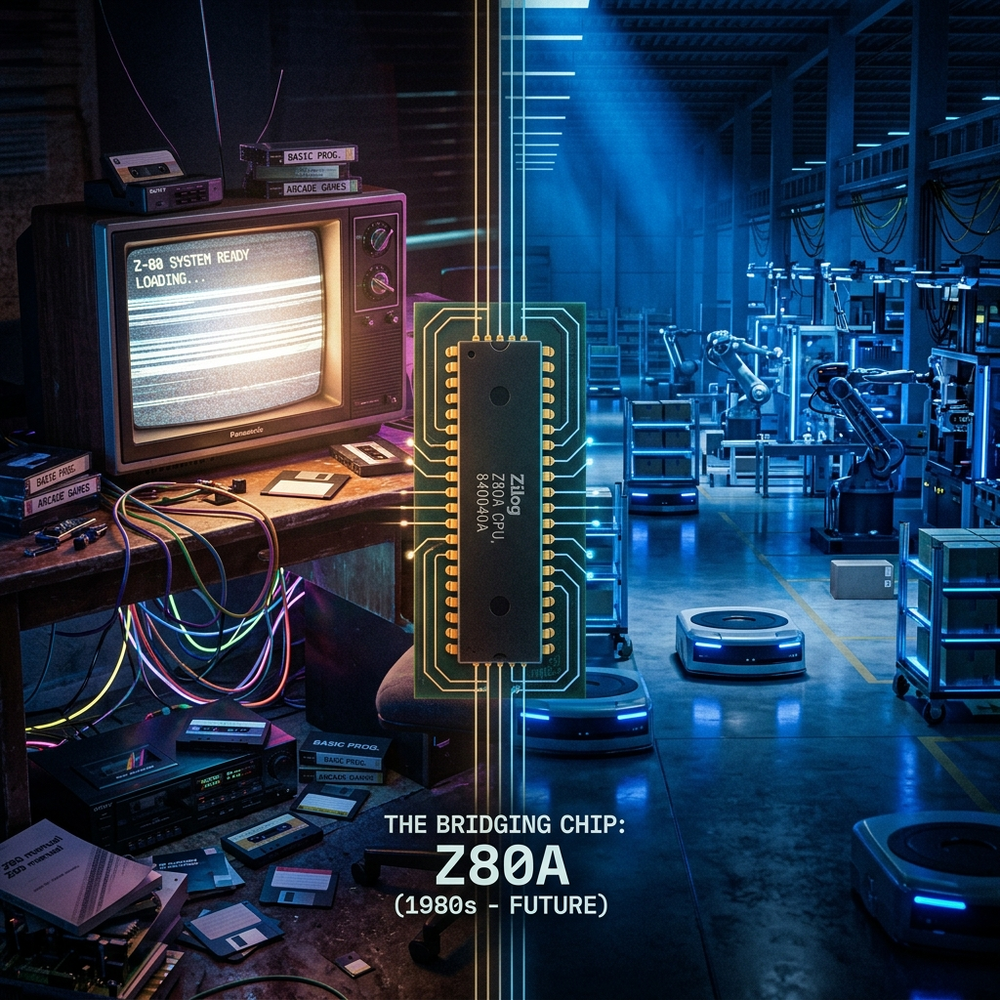
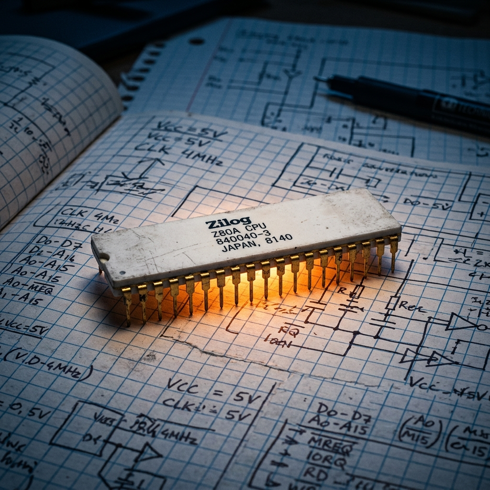
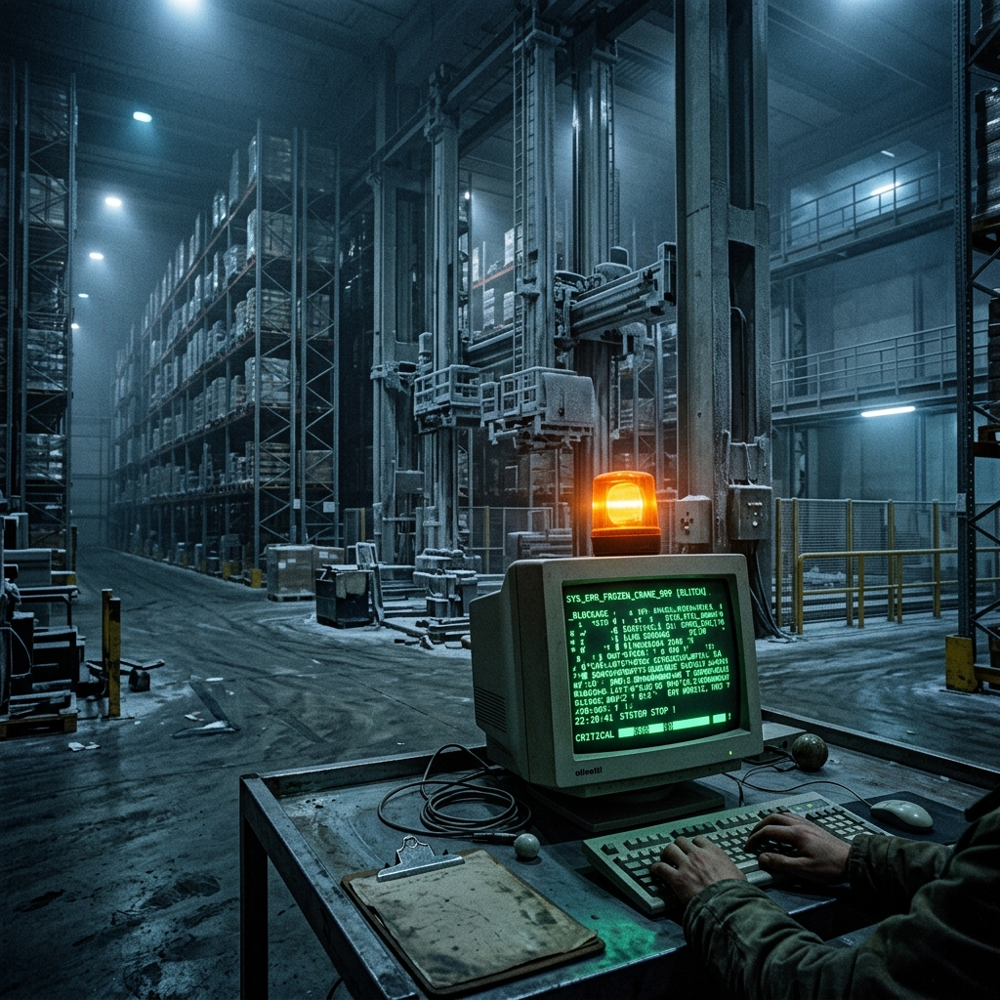
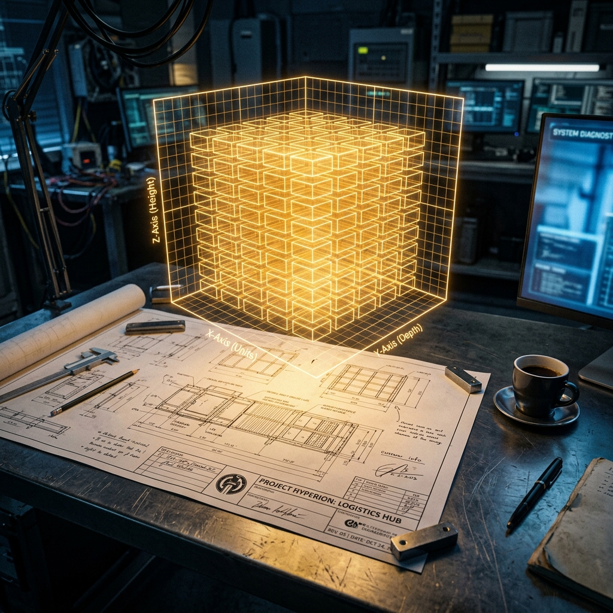
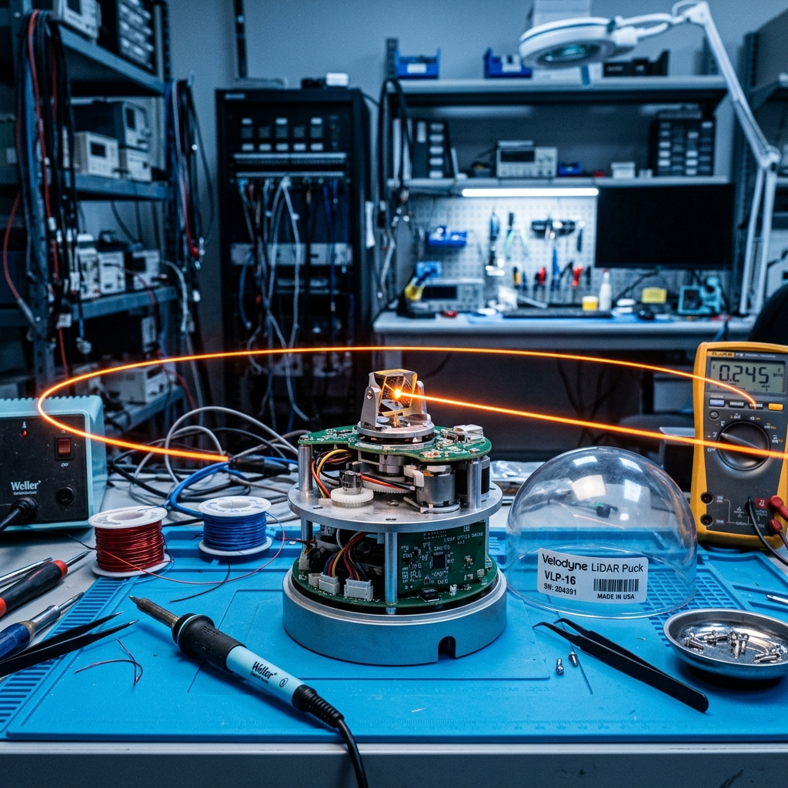
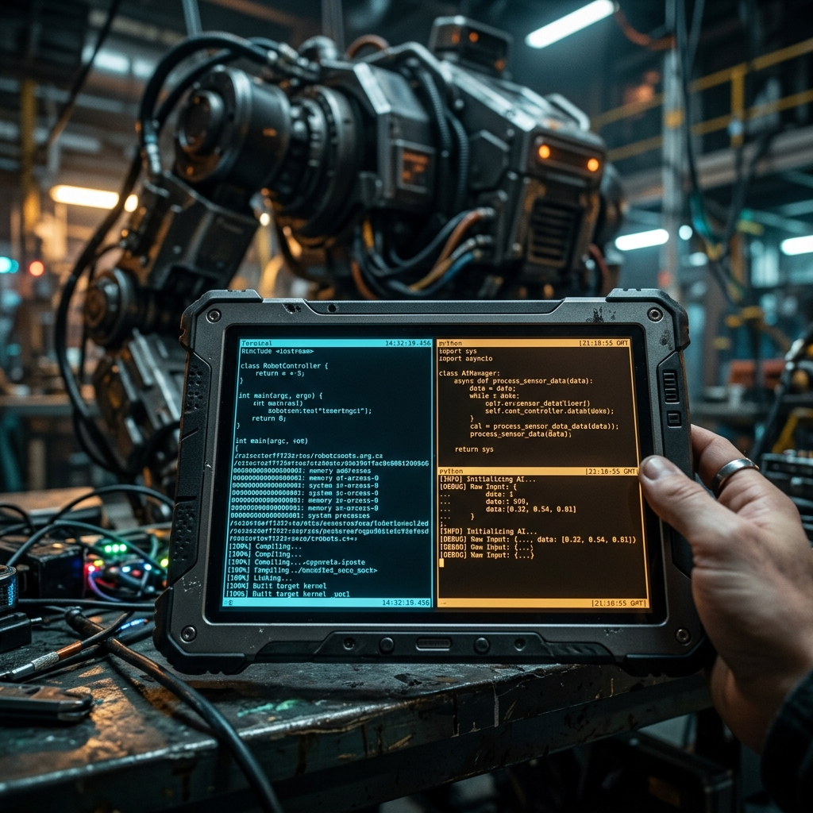
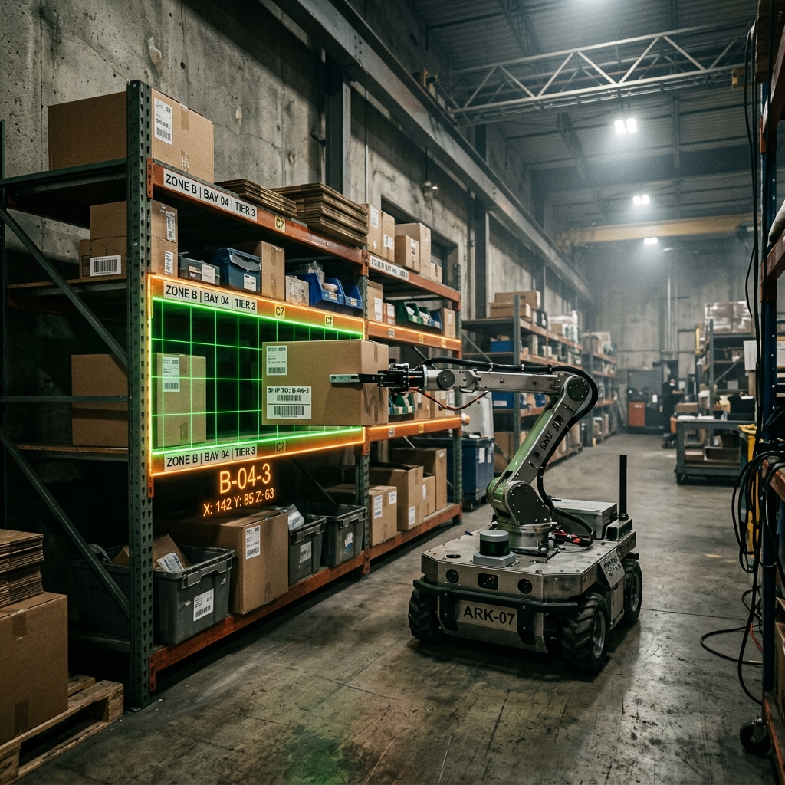

Romance Instrutivo de Tecnologia e Sociedade
📥 Baixar Livro em PDF (Leitura Offline)Para aproveitar ao máximo A Rebeldia da Mecatrônica, preparamos um guia rápido de como navegar por esta obra:
Cada capítulo possui seções de apoio criadas para facilitar seu aprendizado:
Para realizar os desafios, recomendamos criar uma conta gratuita no [Tinkercad Circuits](https://www.tinkercad.com/) para simulações virtuais gratuitas de Arduino, evitando a necessidade de comprar hardware físico imediatamente.
Antes de mergulhar nos robôs inteligentes ou na poeira vermelha de 1986, há uma pergunta simples — e ela é o fio invisível que costura toda a história de Alex:
O que conecta o celular no seu bolso, o controle do seu videogame e a automação de uma fábrica inteira?
A resposta é minúscula, silenciosa e feita de silício.
Para quem olha de fora, a engenharia de computadores parece uma caixa-preta inacessível, um labirinto de fórmulas complexas e códigos incompreensíveis que assustam o iniciante. Mas a verdade é muito mais acolhedora: por trás de toda essa aparente complexidade, a mecatrônica é uma das atividades mais lúdicas e criativas criadas pelo homem. É como brincar com blocos de construir eletrônicos, onde cada bit é uma peça que se encaixa e cada sensor é um olho que damos ao nosso projeto.
Alex aprendeu isso cedo. Ele não queria apenas entender máquinas; queria entender por que elas o fascinavam desde criança — e por que, apesar de toda a teoria assustadora, tudo parecia tão simples quando a luz obedecia aos seus comandos. Ele sabia que, por trás de cada símbolo estranho na tela ou na placa de circuito, havia apenas luz brincando de acender e apagar.
Este livro acompanha a jornada de Alex cruzando o tempo em duas eras de descoberta tecnológica:
Em 1986, um mundo de fios aparentes, fitas cassete lentas e o calor analógico de 8 bits do lendário TK90X.
Em 2026, uma realidade de lasers tridimensionais (LiDAR), processamento em nuvem e robôs autônomos que navegam sozinhos.
A tecnologia saltou quatro décadas, mudando a escala e a velocidade. Mas o coração de silício — esse nunca mudou. O mesmo pulso lógico que acendia um LED em 1986 é o que direciona um robô inteligente em 2026.
Ao longo destas páginas, você aprenderá, de forma visual e analógica, como os bits se movem dentro das gavetas secretas do chip Z80. Verá a matemática tridimensional ganhando vida física para organizar paletes e desviar de obstáculos reais. Descobrirá como a engenharia nos dá o poder real de programar, interagir e governar a eletricidade.
Se você já teve curiosidade sobre como os robôs pensam, ou quer começar a programar seus próprios projetos, esta jornada é sua.
A caixinha preta do progresso está prestes a ser aberta.
E, quando a abrirmos, você verá que a engenharia não é um labirinto impenetrável — é um jogo fascinante.
E você está prestes a aprender a jogá-lo.

Alex sentia o ar gelado das três da manhã cortar o tecido fino de seu casaco. Seus olhos ardiam sob a luz artificial e fria do galpão de Curitiba. À sua frente, o zumbido dos robôs móveis autônomos era cirúrgico, totalmente indiferente à sua exaustão.
A dezoito mil euros a unidade, cada AMR (Autonomous Mobile Robot) patrulhava o piso perfeitamente nivelado do centro de distribuição. Eles operavam com a precisão de um algoritmo bem ajustado — o oposto exato da mente cansada de Alex, que tentava equilibrar o plantão da madrugada com a rotina pesada de Engenharia na UTFPR.
Esses robôs não reclamavam da temperatura.
Não paravam para tomar café.
Não erravam a rota por mais de dois milímetros.
Sob a luz difusa, as linhas invisíveis dos sensores LiDAR riscavam o ar em varreduras silenciosas de 360 graus.
Na tela do monitor duplo, o dashboard de telemetria exibia um fluxo contínuo de dados que alimentava as planilhas financeiras de Bianchi. Bianchi era o diretor regional obcecado pelas metas de produtividade da Faria Lima. Para os investidores, os robôs eram vetores de otimização pura. Para Alex, de 25 anos, no entanto, eram apenas formigas de aço presas em uma engrenagem de cobranças.
Olhando para os gráficos de telemetria, Alex sentiu um aperto familiar no peito. Lembrava-se da piada que corria no centro acadêmico: as pessoas entravam na engenharia sonhando em construir naves espaciais, mas eram imediatamente soterradas por tabelas de limites e derivadas abstratas, sem tocar em um único parafuso por anos. Toda aquela tecnologia de ponta ali na tela — sensores LiDAR tridimensionais, algoritmos preditivos, hardware de milhares de euros — parecia uma barreira intransponível, uma sobrecarga de conceitos técnicos que esmagava o brilho inicial que o fizera escolher o curso. No fundo, ele só queria entender como dar ordens simples à eletricidade.
Um alerta amarelo de inconsistência de inventário piscou na tela.
Setor G, prateleira 42.
Um ponto cego físico, fora da malha de navegação ativa dos robôs autônomos.
Por questões estruturais, aquela área mantinha vigas baixas e piso irregular de concreto áspero, um terreno hostil para os sensores e suspensões dos AMRs. Alex suspirou, pegou o tablet de manutenção e caminhou pelo corredor principal.
Conforme se afastava da zona ativa, o zumbido eletrônico dos robôs dava lugar ao eco abafado de seus próprios passos. O silêncio no Setor G era denso, quase palpável. Um cheiro de madeira úmida e mofo indicava que aquela área não recebia manutenção há anos. Na penumbra, a poeira flutuava sob o feixe de sua lanterna.
Atrás de uma pilha de paletes esquecidos e apodrecidos pelo tempo, uma caixa de papelão desbotada chamou sua atenção. A fita adesiva que um dia a lacrara havia secado e descolado sob a umidade de décadas, como se a própria caixa quisesse se abrir. Alex hesitou por um segundo, sentindo o arrepio da poeira que dançava sob a luz, antes de puxá-la com cuidado.
Sob uma pilha de papéis amarelecidos de formulário contínuo, repousava um componente curioso. Era um chip longo e preto. Alex pegou-o e sentiu a textura fria do encapsulamento cerâmico e um peso inesperado para seu tamanho diminuto. Suas quarenta pernas metálicas, embora levemente oxidadas pelo tempo, reluziam com um brilho opaco sob o feixe da lanterna, salientes como as de uma centopeia de silício. Ele limpou o corpo do chip com o polegar, revelando as letras gravadas em baixo relevo: Z80A.
O chip parecia uma centopeia adormecida, esperando que alguém lhe soprasse vida. Alex imaginou que cada perna metálica era uma porta para um mundo microscópico onde elétrons corriam como formigas apressadas. Por um instante, o galpão deixou de ser galpão. Era só silêncio, poeira e a promessa de que até as máquinas esquecidas têm histórias para contar.
Abaixo do chip, protegido da poeira, estava um caderno de capa preta dura e bordas desgastadas pelo tempo. Alex sentiu o coração acelerar levemente ao tocar na capa áspera. Ao erguer o caderno, uma folha avulsa deslizou e caiu no chão de concreto. Havia uma anotação manuscrita em caneta azul desbotada. Ele reconheceu o traço imediatamente. Ver aquela caligrafia familiar no meio daquele galpão abandonado foi como encontrar um farol inesperado em uma noite de tempestade.
Ele hesitou, respirando fundo o ar úmido, antes de aproximar a lanterna para ler o relato que costurava o passado e o presente:
Alex sentiu um arrepio na nuca. Era o diário de Alex Senior, seu mentor. A pressa de Curitiba e a pressão corporativa de Bianchi desapareceram. Por um instante, o galpão parecia segurar a respiração junto com Alex, como se até o concreto soubesse que aquele chip guardava uma história.
Alex não sabia naquele momento, mas aquele caderno de anotações antigas seria o mapa que guiaria sua própria compreensão sobre engenharia. Seus dedos abriram a primeira página do manuscrito, e o passado se fez presente.
---
A poeira vermelha do Oeste do Paraná tinha uma propriedade quase mística. Grudava em tudo, da sola das botinas às engrenagens mais finas da mente de um piá de 15 anos. Naquela manhã de 1986, o céu sobre Cascavel ameaçava desabar em chuva.
O cheiro de terra úmida subia do chão batido enquanto o ônibus sacudia violentamente. Alex Senior apertava a caixa de papelão contra o peito como se guardasse um tesouro nacional. Ali dentro estava o orgulho da Microdigital: um TK90X novinho.
Era um clone brasileiro do ZX Spectrum britânico, com processador Z80A de 3,5 MHz. Para a escola pública daquela colônia agrícola, a máquina parecia um disco voador. O asfalto ali era uma promessa distante, e o barro era a realidade imediata.
"Cuidado com isso aí, piá," avisou o motorista, desviando de uma vala profunda. "Se quebrar, a escola te faz pagar essa caixa até o ano 2000."
Alex apenas sorriu, embora o estômago estivesse contraído de puro nervosismo. Ele era o técnico encarregado de fazer o computador funcionar. Teria que mostrar o poder do silício para cinquenta alunos que nunca tinham visto uma tela eletrônica. O medo de falhar e passar vergonha no barro pesava mais que a caixa física.
Quando o ônibus finalmente parou, o barro cobria metade das rodas do veículo. A fachada da escola era simples: tijolos aparentes e telhado de fibrocimento. Sem asfalto na rua, Alex precisou dar um salto calculado para não atolar as botinas na lama vermelha.
A sala de aula estava lotada, quente e abafada de expectativa. No centro da mesa, uma TV Colorado de quatorze polegadas com seletor mecânico aguardava.
"É esse o tal cérebro eletrônico?" perguntou o diretor, cruzando os braços com ceticismo.
"Sim, senhor," respondeu Alex, com a voz trêmula ao desembalar a máquina. O TK90X era compacto, pouco maior que um livro de capa dura. Seu teclado de borracha cinza parecia um conjunto de chicletes organizados e macios.
Conectou o cabo RF na antena da TV Colorado e sintonizou cuidadosamente o canal 3. A tela de tubo chiou, exibindo névoa estática antes de abrir um fundo branco brilhante:
`© 1985 Microdigital`. Um murmúrio de espanto correu pela sala.
A parte difícil, no entanto, ainda estava por vir: carregar os programas da fita cassete. Alex posicionou o gravador portátil, conectou os cabos de áudio e inseriu a fita K7. Ele digitou o comando sagrado no teclado de borracha:
`LOAD ""`
Pressionou Enter e apertou o botão Play no gravador de áudio. O silêncio na sala foi quebrado por um ruído agudo, um chiado estridente e rítmico. Era o som do código binário sendo transmitido por pulsos sonoros no ar.
Na tela da TV Colorado, barras horizontais coloridas começaram a piscar freneticamente. O Z80A estava decodificando os dados de áudio para impulsos elétricos internos. Alex Senior prendeu a respiração enquanto o chip fazia o seu trabalho silencioso. Se o cabeçote do gravador estivesse desalinhado por um milímetro, tudo falharia. Cinco minutos de chiado pareciam uma eternidade na mente do piá de 15 anos.
De repente, o barulho cessou. A tela piscou em branco puro e exibiu o cursor ativo. Com os dedos suados de alívio, Alex Senior digitou o comando final:
`RUN`
---
Ao pressionar a tecla Enter, a estática da tela deu lugar a uma cor preta profunda. O processador Z80A começou a traçar o gráfico, instrução por instrução, no seu próprio ritmo. Não havia renderização instantânea; a TV desenhava a imagem linha por linha.
Uma linha azul subia no eixo vertical, curvava-se e cruzava com uma linha vermelha. Lentamente, o programa em BASIC tomou a forma de uma espiral geométrica complexa.
"Meu Deus," murmurou o diretor, ajustando os óculos. "Ele fez a TV desenhar sozinha."
Os alunos romperam em aplausos barulhentos na pequena sala de tijolos expostos. Alex Senior finalmente soltou o ar que prendia nos pulmões com um orgulho imenso. A engenharia se revelava ali não como tortura, mas como poder de dar ordem ao caos da lama.
O chiado estridente da fita K7 na TV de tubo de 1986 de repente silenciou, cortado pelo frio úmido e o ruído contínuo dos climatizadores industriais do galpão de Curitiba em 2026.
Alex moderno piscou os olhos, retornando de sob a chuva de Cascavel para o presente gelado. O flash da TV Colorado foi substituído pelo anel de luz azul e verde do robô AMR 12. Ele ainda estava de pé no Setor G, com o velho chip Z80A brilhando em suas mãos.
A distância temporal de quarenta anos parecia encurtada por aquele pedaço de silício. A frota de robôs modernos que gerenciava a logística dependia exatamente daquela mesma essência lógica.
Ali, no silêncio do Setor G, Alex percebeu que não estava apenas lendo um diário antigo — estava sendo convocado a desvendar o mesmo segredo que conectava a lama de 1986 ao silício de 2026.
---
O Desafio do Código Primitivo
Acesse o emulador online e teste o funcionamento lógico de um loop contínuo digitando a instrução clássica de exibição.
basic
10 PRINT "Ola Mundo!"
20 GOTO 10Agora que Alex resgatou o diário físico, ele precisa compreender as engrenagens ocultas sob o plástico do Z80A. No próximo capítulo, desvendaremos a anatomia interna do processador e aprenderemos a lidar com as pequenas gavetas de dados conhecidas como registradores.
O cheiro forte do café morno de sua garrafa térmica de metal subiu com o vapor, misturando-se ao odor característico de concreto úmido e óleo lubrificante do galpão. Ao longe, o ruído sutil dos AMRs patrulhando o corredor soava como uma respiração mecânica contínua. Alex, sentado no banco rústico de madeira de seu posto de monitoramento, sentiu a luz azulada do monitor refletir diretamente sobre as folhas gastas do diário técnico que segurava no colo. Ele acariciou as bordas do papel, sentindo a poeira fina que ainda persistia nas páginas.
Seus olhos focaram na caligrafia firme de Alex Senior, sublinhada duas vezes:
"Como o Z80 pensa: O mistério dos 8 bits e das gavetas secretas".
Acostumado a programar em Python, onde uma única biblioteca oculta milhares de processos de baixo nível, ele sentiu uma profunda curiosidade. Decidiu mergulhar nas explicações de seu mentor para entender as verdadeiras raízes físicas da computação. Para desmistificar a caixa de metal sob o teclado, as anotações do diário propunham um ponto de partida simples e direto:
Para explicar a manipulação desses bytes no processador, o diário trazia uma analogia visual e lúdica.
Imagine que o processador é um escriturário extremamente ágil, mas que sofre de um grave problema de amnésia de curtíssimo prazo. Ele só consegue processar o que está exatamente sobre a sua escrivaninha de silício neste instante. Para que ele não se perca e acabe travando, o chip possui uma pequena cômoda ao lado, com gavetas de armazenamento ultrarrápidas chamadas registradores.
No Z80, essas gavetas são pequenas: só comportam números de 8 bits. Se o escriturário tentar socar ali dentro um valor maior do que 255, a gaveta simplesmente emperra, estoura e descarta o que passar desse limite.
"Ei!", gritaria o escriturário imaginário. "Não tente colocar duzentos e cinquenta e seis papéis na gaveta A! Só tenho espaço para duzentos e cinquenta e cinco, o resto vai cair no chão!"
O diagrama feito à mão por Alex Senior mostrava a disposição interna dessas gavetas:
A gaveta A é a mais importante da cômoda e chama-se Acumulador. O escriturário a usa para quase tudo. Se você pede para ele somar dois números, ele resmunga: "Certo, mas coloque o primeiro número na gaveta A e o segundo na gaveta B. Agora vou somar os dois e jogar o resultado direto de volta na gaveta A, esmagando o que estava lá antes!"
Alex fechou os olhos por um segundo. A leitura trazia um desconforto incômodo, um sentimento de impostura que vinha guardando há tempos. Na faculdade, ele passava horas escrevendo linhas complexas em Python, importando bibliotecas prontas que faziam mapeamento espacial e filtros de sensores com uma única linha de código. Mas, se alguém lhe perguntasse o que acontecia fisicamente no processador quando ele executava aquela instrução, ele não saberia responder. Ele dependia de camadas e camadas de abstrações criadas por outros. Será que ele era mesmo um engenheiro de computação de verdade ou apenas um empilhador de códigos prontos?
Toda a lógica dos robôs modernos dependia desse escriturário invisível que morava no silício de 1976. Alex sentiu a urgência de compreender o chão de fábrica da computação. O escriturário precisava fazer sentido se ele quisesse, um dia, guiar a luz para que ela obedecesse.
Ele olhou para o código Python correspondente:
acumulador = 10
auxiliar = 5
acumulador = acumulador + auxiliarPor trás do código abstrato, a CPU moderna repete exatamente o mesmo ciclo elétrico elementar. Ela move dados entre registradores físicos de hardware e acumula o resultado final no registrador principal. A linguagem Assembly do Z80 simplesmente eliminava essas máscaras de software.
No diário, a instrução LD (Load/Carregar) era apresentada como a chave de tudo:
`LD A, 10` coloca o número 10 na gaveta A.
`LD B, A` copia o valor contido em A diretamente para a gaveta B.
---
O diário técnico avançava mostrando como o chip se conecta aos dispositivos externos. Havia setas desenhadas da CPU até caixas escritas "Gravador", "Teclado" e "Alto-falante". Alex Senior explicava como transpor a barreira do silício para interagir com o mundo físico.
Alex moderno olhou para o monitor, vendo a telemetria do robô autônomo AMR operando no corredor. O script complexo calculava as distâncias usando o tempo de retorno da luz do laser do LiDAR. No final da linha de processamento do robô moderno de 2026, a ação elétrica era idêntica à de 1986.
Para frear o robô diante de uma viga irregular, a placa executava uma operação de baixo nível. Enviava bits na porta lógica correspondente ao driver dos motores, cortando a corrente de acionamento. Toda a complexidade de ROS 2 e robótica repousava em cascata sobre instruções fundamentais de entrada e saída. A centopeia de silício ensinava a Alex que, no fundo, a engenharia nada mais é do que guiar a luz para que ela obedeça.
Para demonstrar a lógica, o diário apresentava este bloco curto em Assembly do Z80:
; Loop simples para ler o teclado e alterar o som
LEITURA:
IN A, (254) ; Lê a porta de I/O 254 (teclado)
LD B, A ; Salva o estado lido na gaveta B
OUT (254), A ; Envia o mesmo valor para a porta de som
JP LEITURA ; Pula de volta para o início (Loop)A poeira vermelha da estrada de Cascavel e os robôs de última geração dividiam os mesmos princípios básicos. A leitura do caderno fornecia a base que faltava à engenharia puramente abstrata da faculdade.
O escriturário elétrico do Z80 tinha lhe mostrado as gavetas e como elas se conectavam ao mundo lá fora. Alex percebeu que entender o Z80 não era nostalgia — era recuperar o controle sobre a própria engenharia. No silêncio da madrugada de Curitiba, ele sentiu que começava a emergir daquele sentimento incômodo de ser apenas um impostor trocando peças. Agora, restava aprender a linguagem secreta que preenchia cada uma daquelas gavetas elétricas.
---
---
1. Carrega os valores (sensores ou constantes)
2. Manipula os dados nas gavetas
3. Soma, compara ou decide
4. Envia o resultado para o hardware de atuação
---
LD A, 7 ; coloca o valor 7 no Acumulador A
LD B, 3 ; coloca o valor 3 na gaveta B
ADD A, B ; soma B ao valor de A (A = A + B)
OUT (254), A ; joga o resultado (10) para a porta de hardware 254O que acontece fisicamente:
1. O escriturário elétrico coloca o valor "7" na gaveta principal A.
2. Coloca o valor "3" na gaveta de suporte B.
3. Faz a soma física e grava o resultado acumulado ("10") na própria gaveta A.
4. Envia o conteúdo da gaveta A para a porta física 254, que pode ser o controle de velocidade de uma esteira ou a frequência de um som.
---
Nível 1 (Iniciante): Seu Primeiro Programa em Assembly
Escreva a sequência de instruções em Assembly do Z80 para realizar a seguinte lógica passo a passo:
1. Coloque o valor 12 na gaveta A.
2. Copie esse valor para a gaveta B.
3. Some A + B.
4. Envia o resultado somado para a porta física 254.
5. Explique resumidamente o que aconteceu em cada etapa no papel.
Nível 2 (Avançado): O Loop de Som e a Frequência
Utilizando o código em Assembly do Z80 apresentado no final deste capítulo, explique o que aconteceria com a frequência do som emitido pelo alto-falante se a instrução de atraso de tempo (delay loop) fosse inserida entre a leitura do teclado e o comando `OUT`.
---
Alex finalmente entendia como mover dados nas gavetas secretas do chip. Mas ainda não sabia como dar forma ao que via, nem como desenhar o próprio destino na tela. Como fazer a eletricidade virar visão? É isso que Alex vai descobrir a seguir.

A chuva batia no vidro como pixels caindo do céu, desabando sobre o telhado de zinco da escola técnica. O som ensurdecedor da água batendo na chapa de metal isolava a sala de aula do resto do mundo em 1986. Alex Senior sentia os dedos úmidos e o estômago contraído de puro nervosismo. Diante dele, sob a luz trêmula da sala, o cursor vermelho piscava na tela de tubo do TK90X, silencioso e implacável. Sem internet para tirar dúvidas, sem fóruns de programação ou celular no bolso para pesquisar, ele estava sozinho com sua própria persistência e um livreto fino traduzido de forma confusa. O medo de falhar na frente de todos os alunos pesava em seus ombros.
Ele queria criar um jogo de ação espacial com uma nave desviando de asteroides — não apenas para demonstrar o poder do computador, mas para provar a si mesmo e aos colegas céticos que aquela caixinha cinza com chicletes de borracha podia criar mundos inteiros. Ele queria hackear o impossível, transformar ideias abstratas em pixels brilhantes na tela e fazer as pessoas sonharem com as estrelas ali mesmo, no meio do barro de Cascavel.
---
---
Para ir além, ele precisava decifrar a linguagem nativa do chip Z80. Ele tinha que entender como converter números em pixels coloridos na tela. Precisava dominar a matemática invisível que governava os transistores. Para se comunicar com o hardware sem perder a razão, ele anotou uma regra fundamental no diário:
Binário → Hexadecimal → Decimal
0000 → 0 → 0
0101 → 5 → 5
1010 → A → 10
1111 → F → 15A transição da teoria para a prática dependia apenas de um caderno quadriculado.
Para criar o gráfico da nave espacial, Alex Senior abriu seu caderno quadriculado de matemática. Seus dedos tremiam levemente. Com uma caneta esferográfica azul que insistia em falhar devido à umidade, ele contornou uma matriz de 8 colunas por 8 linhas. Riscou, apagou a ponta dos traços com saliva e começou a preencher os quadradinhos centrais para projetar a fuselagem. A cada quadrado preenchido de tinta escura, o desenho parecia ganhar vida diante de seus olhos cansados.
Cada quadrado em branco representava o bit zero (`0`), o silêncio elétrico.
Cada quadrado pintado representava o bit um (`1`), o sinal de luz.
Linha por linha, o que antes era apenas rascunho de caneta virava uma sequência numérica precisa.
A primeira linha desenhada tinha o padrão binário `00011000`, equivalente ao decimal 24.
A segunda linha exibia `00111100`, que correspondia ao número decimal 60.
A terceira, com as asas da nave totalmente abertas, formava `11111111` (decimal 255).
Alex Senior traduziu o desenho em uma lista de oito números decimais de controle. Aquele conjunto numérico era o código genético de sua nave na memória. Ele usaria o comando `POKE` do BASIC para gravar esses valores diretamente no hardware.
---
A imagem pixelada daquela nave espacial desenhada na TV Colorado de tubo pareceu vibrar no vácuo do tempo, transicionando da luz trêmula de fósforo para o pulso elétrico invisível que guiava o robô AMR em Curitiba, em 2026. O mesmo bit que decidia se a fuselagem da nave espacial de 1986 brilhava na tela era o que comandava o disparo do sensor LiDAR moderno.
Alex moderno levantou os olhos do diário no galpão silencioso de Curitiba. Ele observou o motor de tração de um dos robôs AMRs parado na estação de carga. No eixo da roda traseira do robô, notou a carcaça de proteção do encoder óptico. O princípio do sensor moderno era o mesmo grid quadriculado desenhado por seu mentor.
Dentro do encoder óptico, um pequeno disco plástico transparente e cheio de ranhuras pretas girava com o eixo do motor. Alex podia ouvir o zumbido agudo da engrenagem e a leve vibração mecânica no metal do chassi do robô. Durante a rotação, um feixe de luz infravermelha de alta frequência atravessava o disco.
O disco do encoder parecia um vitral giratório, onde cada ranhura decidia se a luz passava ou não. Era o robô lendo o mundo em clarões e sombras microscópicos.
O que Alex percebeu aqui é fundamental: o mesmo padrão de luz e sombra que desenhava uma nave espacial em 1986 é o que permite a um robô autônomo navegar com precisão milimétrica em 2026. Toda visão computacional e sensor digital funciona exatamente assim: luz passando ou não passando.
A luz que passava pelas frestas transparentes gerava um pulso elétrico instantâneo: bit um (`1`). Quando a ranhura preta bloqueava o feixe, a corrente cessava: bit zero (`0`). O clique contínuo e silencioso do sensor gerava milhares de bits por second, permitindo à CPU calcular o movimento exato e desviar de obstáculos com precisão milimétrica.
"Tanto poder de processamento em 2026," murmurou Alex, vendo o robô piscar em azul. "E a segurança física de uma máquina cara ainda depende de a luz passar ou não pelo disco. No fim das contas, tudo na engenharia se resume a zeros e uns."
Ele passou a mão sobre a folha amarelada do diário com respeito. A lógica elementar dos bits estava dominada.
Alex finalmente entendia os bits. Agora precisava enfrentar o inimigo que derruba máquinas, congela robôs e assombra engenheiros desde 1976: a memória que falha. Seus dedos folhearam o diário, avançando para as memórias industriais da Itália.
---
---
Desafio Guiado: Do Pixel ao Sensor
1. Desenhe uma grade de 8x8 em um papel quadriculado e monte o desenho de um invasor espacial simples.
2. Converta cada linha preenchida para sua sequência binária correspondente (onde quadradinho pintado é `1` e em branco é `0`).
3. Converta cada linha binária em seu número decimal equivalente.
4. Agora imagine que cada uma dessas linhas representa um "disco de encoder": onde está `1` a luz infravermelha passa, e onde está `0` ela é interrompida. Explique como o circuito do robô usaria essa alternância de bits para descobrir que a roda está se movendo de fato.
---
Tudo na engenharia do silício era, no fim, uma partitura silenciosa de luz e sombra. E às vezes, a sombra vencia. O que acontece quando os reservatórios de luz esgotam seu espaço e tudo congela no escuro? É esse o mistério elétrico que Alex investigará a seguir.

Alex moderno ajeitou o casaco pesado, sentindo o ar congelante da madrugada do galpão infiltrar-se pelas costuras. Ao longe, o zumbido metálico dos AMRs parecia uma pulsação distante, abafada pelo cheiro penetrante de óleo de máquina e aço frio que impregnava o posto de monitoramento. Sob a luz azulada de suas telas, he virou a folha áspera do caderno técnico de seu mentor, notando as marcas secas de café que contornavam uma caligrafia em tinta azul escura.
No topo da página, o cabeçalho em itálico trazia a nova ambientação:
"Milão, Itália – Inverno de 2001. O dia em que o gigante de aço congelou".
Em Milão, a sombra venceu. O silêncio úmido de Curitiba parecia ecoar o vazio gélido do galpão italiano de duas décadas atrás.
---
---
---
Alex sorriu sozinho, pensando em como a história de seu mentor pulava de década em década nas páginas daquele diário. Parecia um osciloscópio mal calibrado, onde o sinal elétrico saltava entre épocas sem pedir licença. Ele brincou mentalmente que precisaria ajustar o ganho do canal vertical de sua própria atenção para não sofrer um curto-circuito tentando rastrear a alternância daqueles clocks. No fundo, a eletrônica real era assim: feita de transições abruptas, ruídos de fundo e sincronização rigorosa de pulsos.
Moretti, vermelho de raiva e pavor, andava de um lado para o outro exigindo que chamassem os engenheiros alemães do suporte ao custo absurdo de mil euros por hora de deslocamento. Se aquela linha de montagem de automóveis ficasse parada por mais de duas horas por falta de componentes, a demissão em massa seria inevitável. O desespero dos operadores era quase palpável, misturado ao vapor gélido de suas respirações.
Alex Senior empurrou os manuais e encarou o teclado cinza da IBM. Ele posicionou a mão sobre o teclado, sob os olhares irritados de Moretti. Pressionou o Ctrl, o Ctrl-Alt-Del e bateu firme no Del.
---
Ao pressionar Ctrl, Alt e Del simultaneamente, a placa de teclado e a placa-mãe enviam um sinal elétrico prioritário direto ao pino físico de Interrupção Não-Mascarável (NMI) da CPU.
Pense no NMI como o sinal máximo de prioridade: é como quando o professor bate palmas muito forte na sala de aula e toda a conversa para imediatamente, não importa o que cada aluno estivesse fazendo ou dizendo.
Quando você pressiona essa combinação de teclas, não está "pedindo com educação" para o sistema operacional reiniciar por meio de um software — você está forçando fisicamente o hardware a acordar através de um pulso de eletricidade direto nas portas lógicas do processador.
CPU executando instruções comuns de controle
│
▼
[NMI disparado]
(Ctrl + Alt + Del envia sinal no pino físico)
│
▼
A CPU interrompe tudo na hora
(limpa as gavetas de registradores)
│
▼
Zera o ponteiro e recomeça da ROM
(Endereço físico 0000h)O NMI é o equivalente elétrico de alguém acionar o freio de emergência de um trem de carga em alta velocidade. O pino de interrupção recebia um pulso elétrico direto que forçava um "tranco" interno imediato. Sem chances de argumentação por parte do sistema operacional, tudo silenciava abruptamente na CPU para que o hardware pudesse recomeçar do zero absoluto.
Alex imaginou a centopeia de silício suspirando aliviada ao ser resetada, limpando de suas gavetas metálicas o entulho de dados acumulados que a faziam travar, seguindo este fluxo lógico preciso:
[Registradores cheios de lixo / travados]
│
▼ NMI (Disparo de sinal físico)
[Registradores limpos e zerados]
│
▼
[PC = 0000h (Program Counter aponta pro início)]
│
▼
[BIOS/ROM reinicia a leitura de inicialização]As gavetas de registradores congestionadas na memória RAM são totalmente limpas. O Program Counter (PC) volta para o endereço de início (zero) da ROM. O chip lê as primeiras instruções da BIOS gravadas na memória não-volátil, forçando o reboot completo do sistema.
A tela do terminal piscou e exibiu o cursor ativo após o bipe de inicialização. O MS-DOS antigo recarregou o banco de dados e as esteiras começaram a roncar de novo. O gigante de aço acordou de seu transe e Moretti parou de gritar.
---
O eco mecânico dos transelevadores reiniciando em Milão dissolveu-se gradativamente na mente de Alex, fundindo o brilho verde-fósforo do antigo terminal de 2001 com a tela brilhante e colorida do tablet moderno que carregava nas mãos, sob o sopro pressurizado das pinças pneumáticas de Curitiba em 2026. Três épocas diferentes cruzando o tempo, mas unidas pela mesma linha física de falhas humanas:
Linha do Tempo das Quebras de Memória:
1986 (Cascavel) ──► TK90X trava por estouro físico de dados carregando BASIC
2001 (Milão) ──► Transelevador congela por Memory Leak (C++ no MS-DOS)
2026 (Curitiba) ──► Robô AMR trava por pilha de RAM exaurida com nuvens de pontosAlex moderno olhou para a telemetria do robô autônomo AMR. No diário, a anotação técnica detalhava a causa física daquele travamento histórico na Itália. O sistema rodava sob o MS-DOS com apenas 640 KB de memória convencional útil.
Cada palete ou caixa movimentada no galpão exigia que o software alocasse dinamicamente um bloco de memória RAM para rastrear sua posição. Se o programador esquecesse de liberar explicitamente esse endereço de memória após a caixa ser entregue, aquele espaço ficava ocupado inutilmente.
Esse é o famoso vazamento de memória (Memory Leak).
Em C++, o erro clássico de vazamento de memória ocorre assim na prática:
while (true) {
Coordenada* posicao = new Coordenada(); // Aloca dados na RAM
// erro crítico: esquecemos de dar "delete posicao;" para liberar o espaço!
}Esse é o tipo de erro invisível que derrubou Milão em 2001 e que continua paralisando robôs autônomos modernos em 2026 se a RAM estourar.
Hoje, operando com gigabytes de memória RAM, Alex enfrentava exatamente o mesmo fantasma elétrico. Sentiu uma onda de frustração ao se lembrar da noite anterior, quando o robô AMR 08 começou a andar em círculos erráticos no meio do Setor C, ignorando os comandos de rede até congelar completamente sob o olhar enfurecido de Bianchi, que já ameaçava cortar verbas de manutenção. As câmeras estéreo do robô geravam nuvens de pontos tridimensionais gigantescas que acumulavam lixo na pilha de memória, vazando bytes silenciosamente até exaurir o sistema. O déjà-vu com o diário de seu mentor era assustador: o hardware mudara, mas a negligência humana continuava idêntica.
Ele havia passado o início do plantão usando ferramentas modernas de diagnóstico em C++, como o Valgrind, caçando vazamentos ocultos como quem busca goteiras sob o teto. A essência do problema era a mesma que Alex Senior resolvera na Itália.
A saudação de três dedos salvara o armazém de Milão em 2001. Agora, no silêncio da madrugada de Curitiba, Alex precisava descobrir qual gesto ou linha de código salvaria sua própria infraestrutura em 2026. Ele passou os dedos sobre o diário, pronto para o próximo passo.
---
Para ver um vazamento de memória acontecendo diante dos seus olhos sem precisar programar nada, faça este teste simples agora:
1. Abra o Gerenciador de Tarefas do seu computador (pressione `Ctrl + Shift + Esc`) e clique na aba Desempenho -> Memória.
2. Abra seu navegador web e abra dezenas de abas em sites pesados ou vídeos simultâneos. Veja o gráfico da memória RAM subir e a porcentagem de uso disparar.
3. Agora, feche todas as abas de uma vez. O consumo de RAM deve despencar de volta para o nível inicial. Se o consumo não retornar ao valor de repouso e continuar "preso" em um nível alto, significa que o navegador teve um pequeno vazamento de memória. Em computadores de uso pessoal, fechar o programa resolve temporariamente; em robôs ou indústrias que rodam sem parar por meses, isso congela a máquina de forma fatal.
---
---
Desafio Guiado: Caçando Vazamentos de Memória
1. Escreva um pseudo-código demonstrando o erro lógico clássico de criar variáveis dinâmicas em loop sem desalocá-las.
2. Identifique e escreva qual instrução de limpeza (`delete` ou `free`) resolveria o vazamento.
3. Se cada iteração do loop consome 128 bytes de RAM e o microcontrolador antigo possui apenas 64 KB de memória disponível, calcule quantas repetições seriam necessárias para travar o sistema completamente por estouro de pilha.
4. Explique por que, mesmo em computadores modernos com gigabytes de memória, um vazamento contínuo em serviços de rede que rodam por meses acabará travando a máquina.
5. Desafio Visual e Analógico: Em seu caderno técnico de estudos, desenhe uma caixa d'água com um pequeno furo na base e uma torneira no topo. Desenhe o nível da água descendo progressivamente a cada minuto até secar completamente. Escreva abaixo do desenho: "Isto representa um vazamento de memória (Memory Leak) – o espaço de trabalho da CPU se esgotando gota a gota até o travamento físico do sistema."
---
Reiniciar uma máquina e apagar suas falhas elétricas é fácil. Mas como reiniciar uma vida, ou reordenar as interrupções que a realidade nos impõe a cada segundo? Alex moderno fecharia o tablet sentindo que o próximo código exigiria mais do que apenas apertar botões. O que acontece quando o sistema se recusa a silenciar? É isso que veremos a seguir.
Se no capítulo anterior vimos o que acontece quando a memória falha, agora veremos como o hardware reage quando o mundo físico exige atenção imediata.
Alex moderno encarava a tela azul como quem encara um espelho sob a madrugada que avançava em Curitiba. O vento frio uivava do lado de fora e fazia as telhas metálicas do galpão vibrarem levemente. O som contínuo e grave dos climatizadores industriais preenchia o ambiente, misturado ao cheiro persistente de óleo lubrificante e poeira de aço. Ele se ajeitou no posto de monitoramento, observando o brilho azul pulsante dos AMRs que deslizavam silenciosamente pelo piso. Com os dedos frios, ele virou a página do caderno técnico, revelando um diagrama de circuito detalhado, desenhado a bico de pena com um capricho quase cirúrgico.
O título, escrito em letras garrafais, alertava:
"Interrupções (IRQ): O botão de pânico do hardware e a ilusão do multitarefa".
Uma interrupção (IRQ) é um sinal elétrico externo que força a CPU a parar o que está fazendo. Para desvendar como a CPU equilibrava tantas tarefas físicas em tempo real, Alex leu a analogia clássica de seu mentor:
O escriturário não pode ignorar o telefone. Ele pega um lápis e faz uma marca rápida na linha exata da página onde parou a leitura. No tempo da CPU, esse lápis é a ação de salvar o registrador Program Counter (PC) — aquela "setinha" apontando para a próxima instrução que vimos no capítulo das gavetas — diretamente no topo da Stack (a pilha de memória).
Antes da IRQ:
PC → 0x0042
Após IRQ:
Stack topo → 0x0042
PC → endereço da ISR (Rotina de Serviço de Interrupção)O processador era um leitor compulsivo interrompido por telefonemas urgentes. Cada IRQ era um toque insistente dizendo: "Atende! É importante!". Alex riu sozinho ao ler isso no diário.
Antes que pudesse continuar a leitura, um alarme real disparou no painel do sistema de telemetria de Curitiba, com um sinal sonoro estridente que rasgou o silêncio do posto de monitoramento. Alex deu um salto em sua cadeira, sua própria rotina mental sendo bruscamente interrompida. Ele perdeu a linha exata onde estava lendo no caderno técnico. Rápido, marcou com o polegar a página da anotação — salvando o estado de sua atenção, como o PC na pilha — antes de se virar para as telas de monitoramento.
O paralelo era cômico e exaustivo: ele era o escriturário, e o galpão era o telefone vermelho tocando sem parar.
Durante os dez minutos seguintes, Alex executou a sua própria Rotina de Serviço de Interrupção (ISR): analisou os sensores do corredor 4, identificou uma oscilação na corrente de alimentação de um sensor óptico e reiniciou remotamente a interface de rede do setor afetado. Uma vez estabilizado o sinal, o perigo cessou e a sirene se calou.
Com o silêncio restabelecido, Alex pôde finalmente voltar ao diário de seu mentor. Deslizando o polegar da marcação que fizera, retomou a leitura exatamente da palavra onde o alarme o havia interrompido.
No MS-DOS antigo, o gerenciamento de hardware ocorria através desse jogo elétrico rápido. O teclado, o mouse e as primeiras placas de rede conversavam pela linha física IRQ. Ao pressionar uma tecla, o sinal interrompia o fluxo da CPU para capturar o código digitado.
Se a IRQ é um telefonema urgente, o RESET é o equivalente a puxar o cabo da tomada e religar.
---
Quando o sistema operacional congelava por completo, restava apenas o pino físico de RESET. O acionamento forçado limpava a linha elétrica de clock, obrigando o ponteiro Program Counter (PC) a esquecer tudo e pular instantaneamente para o endereço inicial da ROM.
No Z80, esse endereço sagrado de recomeço era o hexadecimal `0000h`. Nas placas modernas da arquitetura x86, o ponteiro aponta para `FFFF:0000h`. De repente, a máquina dá o clássico "bipe" curto e estridente do POST, a tela do terminal pisca em preto puro antes de abrir os primeiros caracteres de diagnóstico que começam a correr em cascata, trazendo o sistema de volta à vida com um sopro de ordem elétrica.
---
Se no DOS o mundo era essencialmente monotarefa, no Linux embarcado o truque é fazer parecer que tudo acontece ao mesmo tempo.
O estalo seco e metálico das teclas do teclado mecânico IBM de 2001 esmaeceu na poeira do tempo, dissolvendo-se no zumbido constante do sinal de Wi-Fi de alta velocidade e nas emissões eletromagnéticas da frota de Curitiba em 2026. O fósforo verde dos antigos terminais industriais dava lugar ao brilho neon azul e verde dos sensores ópticos modernos, embora o passado continuasse sangrando para dentro do presente em cada pulso elétrico.
Alex moderno observou o robô AMR 08 patrulhar a doca 12 do galpão. O robô parecia executar simultaneamente seu mapeamento, Wi-Fi e controle de motores. Mas, na física da CPU do robô, o princípio de interrupção governava tudo.
O Linux embarcado que gerenciava a inteligência do AMR 08 utilizava o escalonador do kernel para dividir o tempo de processamento. A cada milissegundo, um timer interno de hardware disparava uma interrupção. O processador pausava por nanossegundos a transmissão de dados pelo Wi-Fi, salvava onde estava no mapa tridimensional do LiDAR, pulava para verificar os encoders de tração das rodas para evitar que o robô batesse em um operador e, logo em seguida, voltava a enviar pacotes de rede.
Para quem olhava de fora, as tarefas pareciam simultâneas, uma harmonia invisível de robótica autônoma. Mas, na verdade física do chip, a CPU saltava freneticamente entre o Wi-Fi, o LiDAR e os motores, como um malabarista mantendo três pratos girando no ar. Compreender esse malabarismo elétrico era o segredo para evitar colisões catastróficas nas docas do galpão.
Se o Z80 era um escriturário elétrico, o sistema operacional era o maestro — e Alex estava prestes a reger a orquestra inteira.
---
O Algoritmo de Prioridade
Escreva um pequeno pseudo-código demonstrando o funcionamento de um loop principal que é interrompido por um sinal externo crítico de botão de emergência.
---
Controlar as interrupções elétricas é vital para manter o cérebro do robô estável. Mas o que acontece quando esse escriturário precisa se mover por um mundo de três dimensões reais e as gavetas de dados não cabem no espaço físico? No próximo capítulo, Alex descobrirá que, para governar o movimento, a matemática precisa ganhar cheiro de aço e poeira.

O aquecedor barulhento da pequena sala de controle estalava incessantemente, travando uma luta inglória contra o frio cortante do inverno de Milão em 2001. A matemática ali ganhava cheiro de metal e poeira. Ao lado do terminal antigo de fósforo verde, uma xícara de café já esfriara por completo, com uma película escura formada na superfície. Alex Senior respirava fundo, observando o vapor suave de seu hálito se misturar ao cheiro de papel úmido e mofo das plantas baixas industriais espalhadas sobre a mesa de fórmica cinza. Ao longe, através da janela dupla de vidro, ouvia-se o eco metálico e grave dos transelevadores deslizando pelos trilhos de aço do armazém silencioso.
O galpão de armazenamento estava à beira do colapso. Noventa por cento da capacidade nominal física do espaço já havia sido tomada por caixas e paletes. Para piorar a situação, a diretoria italiana acabara de assinar um contrato de distribuição emergencial e exigia estocar mais dez por cento de carga sem expandir um único metro quadrado de estrutura física. A mensagem do supervisor Moretti fora curta e direta: se o sistema não encontrasse espaço para os novos lotes nas próximas vinte e quatro horas, a linha de montagem da Fiat pararia por falta de insumos, e a demissão de Alex Senior seria a primeira a ser assinada.
Alex Senior olhou para o relógio de pulso que marcava três da manhã. O ponteiro dos segundos parecia correr rápido demais no silêncio pesado da sala. Do lado de fora, o eco metálico e seco de um transelevador freando abruptamente vibrou pelo piso de concreto, lembrando-o da fragilidade mecânica do sistema. O peso da responsabilidade apertava seu peito; dependia dele, e apenas dele, reprogramar a inteligência daquele espaço rígido a tempo.
Antes de resolver o caos físico, Alex precisava transformar o galpão em matemática pura. A solução lógica do problema não estava no aço das prateleiras, mas no código do software. Ele precisava programar o terminal para otimizar cada centímetro livre no local, convertendo os paletes físicos em representações lógicas na memória da CPU. Para estruturar a movimentação tridimensional, o diário trazia a formulação das matrizes espaciais.
Alex Senior sabia que, para quem olhava de fora, aquelas matrizes 3D empilhadas nas páginas podiam parecer caixas mal rotuladas num galpão abandonado. Um estudante curioso, ao abrir a porta desse labirinto de coordenadas e vetores tridimensionais, correria o risco de se perder sem um mapa simples. "Talvez devêssemos colocar algumas placas de entrada fácil antes de exigir que dominem toda a álgebra linear", riu ele para si mesmo. Mas a verdade é que a matemática do espaço é como construir um mapa de Minecraft: você só precisa aprender a definir onde cada bloco começa e termina para dominar a física do jogo.
Para mover o transelevador mecânico sem risco de colidir, a máquina precisava validar essa álgebra linear em tempo real.
O sistema gerenciava a ocupação das prateleiras usando matrizes de bits. Se um bloco do espaço estivesse ocupado por carga, seu valor na matriz era um (`1`). Se o espaço estivesse livre e desocupado, o valor binário correspondente era zero (`0`). Se antes um bit decidia o brilho de um pixel na tela, agora decidia se um palete físico caberia ou não na estrutura de aço.
Por exemplo, um motor industrial pesado não ocupava apenas uma coordenada simples, mas sim um bloco de 3 × 2 × 1 células na matriz. Antes de o transelevador mover a carga física, o computador multiplicava as células do bloco de destino. Se um único bit retornasse um (`1`), mesmo que na ponta da prateleira, o software detectava a colisão e abortava a movimentação.
Camada Z = 0 (Nível do Solo)
[0][1][0][0] <- Coluna ocupada por outro palete (1)
[0][1][0][0]
[0][1][1][0] <- Carga atual ocupando mais de uma célula (1)A matriz tridimensional era como um condomínio de caixas, onde cada apartamento podia estar ocupado ou vazio. O robô era o síndico mais rígido do mundo. Alex moderno respirou fundo, folheando a página. Era incrível como a matemática, tão abstrata nas salas de aula da faculdade, ganhava cheiro de metal, óleo e poeira no galpão real.
---
O cheiro de mofo italiano dissolveu-se no ar frio de Curitiba. O frio cortante do inverno de 2001 e o barulho de seus transelevadores de carga se dissiparam sob a névoa úmida, abrindo espaço para a claridade cinza do amanhecer em 2026. Os mapas de papel e as fórmicas da sala antiga agora renasciam na tela brilhante de um tablet industrial, onde a matemática de espaço 3D se transformava no mapa de navegação vetorial do robô AMR.
Alex moderno abriu o terminal de testes em seu tablet de manutenção. Do mezanino, ele observou o robô AMR 12 carregando uma enorme caixa de baterias. O zumbido agudo dos servomotores do robô ecoou pelo galpão enquanto ele acelerava. O robô avançava em direção ao Corredor B, onde um palete de componentes hidráulicos já estava estacionado de forma irregular. De repente, o anel luminoso do LiDAR no topo do robô começou a girar freneticamente, projetando feixes verdes invisíveis que rastreavam o obstáculo, e a telemetria no tablet piscou em amarelo vibrante. O coração de Alex disparou, martelando no peito enquanto ele segurava a respiração, observando a aproximação rápida e perigosa do robô naquele espaço milimetricamente apertado.
O robô dependia de um algoritmo de 3D Bin Packing processado em nuvem para resolver as restrições espaciais rígidas em tempo real. O algoritmo tenta encaixar volumes como quem organiza malas no porta-malas. A heurística First Fit testa o primeiro espaço possível.
Alex abriu a função em Python que rodava na placa de controle do robô para monitorar a detecção de colisões ortogonais:
# Validação de posicionamento tridimensional (First Fit Heuristic)
def verificar_colisao(pos_nova, dim_nova, pos_existentes, dim_existentes):
x_new, y_new, z_new = pos_nova
w_new, l_new, h_new = dim_nova
for (x, y, z), (w, l, h) in zip(pos_existentes, dim_existentes):
# Verifica sobreposição nos três eixos ortogonais simultaneamente
if (x_new < x + w and x_new + w_new > x and
y_new < y + l and y_new + l_new > y and
z_new < z + h and z_new + h_new > z):
return True # Colisão detectada!
return False # Espaço livreO script rodou com sucesso na placa do AMR 12. Faltando menos de dez centímetros para o obstáculo, o robô freou de forma suave e precisa, contornando o palete estacionado. Os bits tinham operado em perfeita harmonia mecânica. Alex soltou o ar que prendia nos pulmões com um sorriso de puro alívio.
O plantão da madrugada terminava ali, sob as primeiras luzes da manhã que rompiam as janelas altas do galpão de Curitiba. A matemática do espaço não era mais um conceito abstrato — era o que mantinha o galpão vivo. Alex guardou o chip Z80A de forma segura em seu estojo, recolheu o diário e preparou-se para enfrentar o caos vivo e coreografado das máquinas em movimento.
---
Nível 1 (Iniciante): A Otimização de Caixas
Implemente o cálculo manual da eficiência volumétrica (Efe) para um palete de volume total de 1m³ contendo exatamente 4 caixas retangulares de dimensões 40x50x30 cm.
Nível 2 (Avançado): O Código de Colisão
Modifique a função em Python `verificar_colisao` apresentada no capítulo para incluir uma margem de segurança física de `0.05` metros (5 cm) em todos os lados de cada caixa a fim de evitar que vibrações dos robôs façam as cargas se tocarem.
---
A matemática do espaço havia trancado a inércia dos transelevadores rígidos. Mas e quando o espaço começa a se mover sozinho, e o silêncio é quebrado pelo despertar de dezenas de robôs autônomos que dançam de forma independente pelas avenidas de aço? Como coordenar essa inteligência sem que nenhuma formiga trave o enxame? É isso que Alex verá a seguir.
O enxame de silício começou a se mover sob a fria claridade da manhã. O relógio de ponto marcou exatamente seis horas, indicando que o plantão de Alex moderno havia terminado oficialmente em Curitiba. Em vez de ir embora, ele subiu a escada até o mezanino de observação, ansioso por presenciar "O Despertar do Enxame".
As primeiras luzes do amanhecer começavam a cortar as janelas altas.
Nas docas de carga, o silêncio foi quebrado por bipes eletrônicos.
Nas estações de recarga, dezenas de robôs AMRs acenderam seus anéis de LED.
Eles brilhavam em um azul pulsante, prontos para a jornada de trabalho.
Em uma coreografia perfeitamente ritmada, os robôs iniciaram a movimentação.
Desacoplaram-se das tomadas magnéticas e povoaram as avenidas do galpão.
Cruzavam-se em ângulos retos e desviavam uns dos outros por milímetros.
Parecia um balé mecânico regido por uma harmonia secreta de silício.
De repente, uma pesada caixa de parafusos caiu de uma prateleira alta.
O impacto metálico ecoou no Setor B, no meio do corredor de passagem.
Um AGV (Automated Guided Vehicle) antigo da frota de transição aproximou-se.
Ele parou imediatamente, emitindo um bipe estridente de alarme no local.
Sua câmera básica detectou o obstáculo, mas o robô não sabia o que fazer.
Em dois minutos, uma fila gigantesca de AGVs começou a se formar ali.
Os robôs estavam travados, apitando em coro no corredor principal.
A logística daquele setor estava completamente paralisada.
Bianchi invadiu a área de expedição com as bochechas vermelhas de raiva.
Ele berrava no rádio com os operadores do chão de fábrica:
"Tirem essa caixa do chão! A produtividade do setor caiu vinte por cento!
Eu quero esse corredor limpo ou vou cortar o bônus de todo mundo!"
O robô AMR 08 aproximou-se da fila de AGVs travados e congestionados.
Seu sensor LiDAR giratório escaneou rapidamente a caixa e os robôs parados.
No tablet de Alex, o console de telemetria registrou a mudança de rota.
O algoritmo de mapeamento dinâmico recalculou a malha local do espaço.
Sem hesitar, o AMR 08 girou sobre o próprio eixo traseiro.
Ele desviou da fila e pegou um corredor alternativo estreito no Setor C.
Contornou o bloqueio de forma suave e silenciosa, seguindo a entrega.
Alex observava a cena do alto do mezanino e deu um sorriso de canto.
Para compreender os fundamentos matemáticos que permitiam ao AMR tomar aquela decisão por conta própria, Alex decidiu ler as anotações sobre navegação do diário.
---
Os antigos AGVs eram como trens invisíveis no piso da fábrica.
Eles dependiam estritamente de trilhos físicos, como fitas magnéticas.
Se uma caixa caísse sobre a fita de navegação, o AGV congelava no lugar.
Ele não tinha inteligência ou capacidade de raciocínio de rota.
Os AGVs eram trens obedientes. Os AMRs, por outro lado, eram formigas adolescentes: teimosas, curiosas e sempre achando um caminho novo.
Os modernos AMRs que operam no galpão são autônomos e flexíveis.
Eles possuem um mapa mental tridimensional constantemente atualizado.
Quando um obstáculo surge, os sensores detectam a barreira física.
O algoritmo recalcula a rota em milissegundos, desviando por conta própria.
Um formigueiro opera sem uma formiga chefe comandando no rádio.
Cada inseto segue regras locais simples de desvio e transporte.
Somando milhares dessas ações locais, surge o comportamento de enxame.
Os AMRs funcionan assim: biologia convertida em código de controle físico.
---
A Simulação do Desvio
Desenhe uma malha de grade 5x5 com um obstáculo na posição central. Trace a rota mais curta do canto inferior esquerdo ao canto superior direito desviando do obstáculo.
As formigas eletrônicas sabiam contornar os vãos do galpão, mas como fazer o próprio robô enxergar os contornos do mundo ao seu redor sem depender de fitas de navegação? Qual sensor seria capaz de medir a velocidade da luz para evitar colisões catastróficas sob a névoa? É esse o cérebro óptico e o mistério do laser que Alex investigará a seguir.

Os feixes de laser infravermelho riscavam a névoa fria no laboratório de manutenção técnica, onde o robô AMR 12 repousava sem as tampas protetoras. Alex moderno apontava a lanterna clínica para a cúpula preta do para-choque. Dentro da carcaça circular, um espelho girava silenciosamente a dez rotações por segundo.
Era o sensor LiDAR, os olhos eletrônicos de dezoito mil euros do robô autônomo.
"É como o sensor de estacionamento do carro do seu pai," pensou Alex.
"Só que turbinado com feixes de laser infravermelho e operando na velocidade da luz."
Seus olhos ardiam devido às longas horas de plantão da madrugada.
Para calibrar o sensor após a troca da correia, ele editou o arquivo de transformadas físicas (TF).
Cansado, ele digitou um valor incorreto na matriz de transformação de coordenadas espaciais.
Em vez de 0.05 metros, ele inseriu um deslocamento de translação de 0.15 metros no eixo X.
Uma diferença de apenas dez centímetros nos parâmetros do arquivo de configuração do robô.
Mas no mundo físico da mecatrônica, dez centímetros significavam uma colisão iminente.
Alex iniciou o nó de navegação e acionou o joystick para mover a máquina no laboratório.
O robô arrancou silenciosamente. Ao fazer a curva, o LiDAR varreu as paredes.
Mas devido ao erro de transformada, o computador calculou que a parede estava mais longe.
Um erro de dez centímetros era como usar óculos com grau errado: o mundo parecia no lugar, até que você tropeçava na primeira quina. Alex passou a mão no rosto. Às vezes, a engenharia parecia um jogo de equilíbrio entre números perfeitos e mãos trêmulas.
CRASH!
O AMR 12 colidiu de lado contra a prateleira de aço da manutenção com força.
A cúpula plástica do LiDAR trincou no impacto físico direto.
Um sinal sonoro de colisão e travamento de emergência começou a apitar de forma irritante.
Bianchi invadiu a sala segurando o tablet corporativo de monitoramento técnico.
"Que diabos aconteceu aqui? O painel central indicou colisão física na oficina!
Esse robô custa dezoito mil euros e você bateu contra a prateleira de aço!"
"Fiz uma calibração na transformada do LiDAR," respondeu Alex, com as mãos trêmulas.
"Acho que houve um erro de digitação na matriz de transformada espacial de base."
"Não quero saber de matrizes de configuração de hardware," gritou Bianchi irritado.
"Temos uma auditoria de produtividade técnica do galpão em dez minutos.
Se esse robô não estiver rodando no enxame, eu cancelo seu contrato de estágio.
Você tem exatamente dez minutos para corrigir essa falha ou está fora."
A porta bateu e o silêncio tenso retornou acompanhado do bipe de erro do robô.
O nervosismo tomou conta, mas Alex lembrou-se das regras fundamentais do diário técnico.
Para reverter a colisão, ele precisava traduzir os feixes do laser em dados matemáticos puros.
---
O LiDAR funciona disparando pulsos de laser de luz infravermelha pelo espaço.
O sinal viaja pelo ar, atinge o obstáculo físico e retorna ao receptor óptico do sensor.
A luz viaja na velocidade da luz (c ≈ 3 × 108 m/s).
O microcontrolador mede o tempo total de ida e volta (t) com precisão de picossegundos.
A distância linear (d) até o obstáculo físico é calculada pela equação fundamental:
O sensor calculava a distância correta, mas a transformada interna adicionava o erro na malha.
Alex encontrou o parâmetro incorreto no terminal do sistema operacional de robôs:
`static_transform_publisher 0.15 0 0 0 0 0 base_link laser_frame`
Ele corrigiu o valor do eixo X para `0.05`, salvou o arquivo e reiniciou os processos.
O filtro de fusão de dados foi recarregado, combinando a odometria e o laser do LiDAR.
O erro do mapa encolheu no tablet e o robô voltou a operar de forma centralizada.
---
Para navegar sem desvios, os AMRs modernos utilizam o algoritmo do Filtro de Kalman.
Ele realiza uma estimativa estatística recursiva dividida em etapas de predição e atualização.
O algoritmo combina dados imperfeitos de múltiplos sensores para definir a coordenada real.
O código a seguir demonstra a essência matemática dessa fusão de dados em C++:
#include <iostream>
struct FiltroKalman {
double posicao = 0.0; // Posição estimada (estado)
double incerteza = 1.0; // Incerteza da estimativa (covariância)
double ruido_processo = 0.1; // Ruído de movimento (odometria)
double ruido_medicao = 0.2; // Ruído do sensor (LiDAR)
void predizer(double movimento) {
posicao += movimento;
incerteza += ruido_processo;
}
void atualizar(double medicao_sensor) {
double ganho = incerteza / (incerteza + ruido_medicao);
posicao = posicao + ganho * (medicao_sensor - posicao);
incerteza = (1.0 - ganho) * incerteza;
}
};Alex salvou o código corrigido e o robô voltou ao trabalho antes da auditoria de Bianchi.
Ele provou que a engenharia de controle exige dominar a modelagem matemática contínua.
Estava pronto para entender como integrar tudo no sistema operacional de robôs.
---
---
Nível 1 (Iniciante): Desvio de Obstáculos no Tinkercad
Monte um circuito de teste virtual usando um Arduino Uno e um sensor ultrassônico. Programe o Arduino para acionar um sinal de aviso caso a leitura de distância seja menor que 10 cm.
Nível 2 (Avançado): A Incerteza do Sensor
Altere os parâmetros do Filtro de Kalman simulado no código C++ acima. Aumente o `ruido_medicao` do sensor LiDAR para `2.0` e descreva como a estimativa final da variável `posicao` reage às atualizações em relação à odometria estável.
---
Controlar o LiDAR e as coordenadas espaciais resolve a estimativa de posição do robô no espaço físico. Mas como gerenciar a orquestra inteira de sensores e motores trocando mensagens sem colidir ou entrar em colapso lógico? Como unificar C++ e Python sob um mesmo maestro invisível? É isso que Alex investigará a seguir.

A orquestra de silício aguardava sob o chassi de metal do robô. Com a chave Allen, Alex moderno apertou o último parafuso da tampa lateral do AMR 12, indicando que o invólucro de proteção da máquina estava lacrado. Ele abriu a conexão ssh em seu tablet de diagnóstico para checar os processos internos.
Uma cascata de identificadores se desenrolou no console preto do Linux embutido.
O robô gerenciava simultaneamente tarefas escritas in linguagens diferentes.
Como o silício unificava esses mundos sem travar ou entrar em colapso técnico?
Para resolver esse mistério estrutural, Alex leu sobre a cooperação entre linguagens de controle nas anotações do diário.
Para a estratégia de rota e a inteligência de negócios, a equipe utilizava o Python.
Python é uma linguagem interpretada, mais lenta, mas excelente para regras complexas.
Ela conecta o robô à nuvem do armazém e gerencia a prioridade de entrega do palete.
---
Para fazer o sistema em C++ e a mente em Python cooperarem, usa-se o ROS 2.
O Robot Operating System funciona como um middleware de comunicação de dados.
Ele conecta programas independentes que rodam de forma concorrente, chamados Nós.
O ROS 2 era um maestro invisível regendo uma orquestra de programas que nunca se viam, mas tocavam juntos.
Imagine um canal de rádio corporativo operando em tópicos de publicação e assinatura.
O nó do sensor LiDAR publica as distâncias físicas em um canal chamado `/scan`.
O nó de processamento assina esse canal, trata o ruído e publica a posição real em `/odom`.
O nó estratégico assina `/odom` e decide os comandos de movimentação das rodas.
Os nós funcionam de maneira autônoma, trocando mensagens estruturadas pela rede local.
Abaixo, o modelo de código demonstra a criação desse nó em Python:
import rclpy
from rclpy.node import Node
from geometry_msgs.msg import Twist
class PublicadorVelocidade(Node):
def __init__(self):
super().__init__('publicador_cmd_vel')
self.publicador = self.create_publisher(Twist, 'cmd_vel', 10)
self.timer = self.create_timer(0.5, self.enviar_comando)
def enviar_comando(self):
msg = Twist()
msg.linear.x = 0.5 # Velocidade linear
msg.angular.z = 0.1 # Rotação angular
self.publicador.publish(msg)E o receptor de reflexo rápido, compilado em C++, recebe os comandos e atua nos motores:
#include "rclcpp/rclcpp.hpp"
#include "geometry_msgs/msg/twist.hpp"
class ReceptorVelocidade : public rclcpp::Node {
public:
ReceptorVelocidade() : Node("receptor_cmd_vel") {
assinatura_ = this->create_subscription<geometry_msgs::msg::Twist>(
"cmd_vel", 10, std::bind(&ReceptorVelocidade::callback_velocidade, this, std::placeholders::_1));
}
private:
void callback_velocidade(const geometry_msgs::msg::Twist::SharedPtr msg) const {
double vel = msg->linear.x;
// Atuação física no driver do motor
}
rclcpp::Subscription<geometry_msgs::msg::Twist>::SharedPtr assinatura_;
};Alex observou os logs provando a perfeita comunicação concorrente dos dois nós.
Ele aprendeu como a arquitetura do robô se organizava em processos paralelos.
Agora, precisava aplicar essa troca de dados para resolver o empilhamento das caixas.
---
---
Nível 1 (Iniciante): A Criação do Tópico
Desenhe o diagrama de fluxo de dados mostrando o caminho da mensagem desde o sensor LiDAR físico até a atuação na roda, indicando os nós e nomes dos tópicos intermediários.
Nível 2 (Avançado): O Nó de Escuta em C++
Complete a implementação da função `callback_velocidade` no código C++ acima. Crie uma variável para receber a velocidade angular da curva (`msg->angular.z`) e adicione uma linha de log `RCLCPP_INFO` para exibir esse parâmetro de rotação.
---
A orquestra do ROS 2 tocava em harmonia concorrente, unindo sensores e motores. Mas o que acontece quando o robô precisa usar toda essa comunicação para decidir onde colocar as caixas no galpão sem congelar a CPU em cálculos infinitos? Como resolver a arrumação de forma rápida e mecatrônica? É isso que Alex verá a seguir.

As caixas aguardavam a decisão de encaixe na doca de Curitiba. Alex moderno observou o robô AMR 12 desacelerar suavemente no Setor B. Em cima do compartimento de carga da máquina, repousavam três caixas de papelão de tamanhos diferentes contendo rolamentos, eixos e sensores.
O robô precisava decidir em quais nichos vazios colocaria cada volume.
A decisão devia ser tomada em frações de segundo para otimizar o espaço livre.
Para entender essa lógica de controle, Alex abriu o diário de seu mentor.
Para acelerar a triagem e evitar o travamento dos microprocessadores, o diário apresentava o limite combinatório.
Se você tentar calcular todas as combinações de empilhamento de caixas, a matemática explode.
O número de combinações possíveis cresce de forma fatorial com novos itens.
O computador mais potente do mundo levaria séculos processando o cálculo.
Chamamos isso de problema NP-difícil; o tempo de cálculo é o inimigo real.
Calcular todas as combinações era como tentar organizar um armário enquanto alguém jogava roupas infinitas pela porta.
A lógica do algoritmo baseia-se em uma analogia comum de arrumação de bagagem.
Ao arrumar uma mala de viagem, você não joga itens aleatoriamente pelo espaço.
A regra clássica manda ordenar os volumes por tamanho, do maior para o menor.
Acomodamos as peças maiores primeiro no fundo para preencher o volume principal.
Os itens menores e flexíveis (como meias) ficam por último para ocupar as frestas.
O algoritmo do AMR ordenou as três caixas recebidas em sua malha lógica.
Colocou a maior de rolamentos no fundo e a menor de sensores no vão restante.
Ele calculou a eficiência volumétrica por álgebra linear em tempo real:
# Algoritmo First-Fit Decreasing (FFD) Simplificado
def otimizar_alocacao(itens, capacidade_nicho=100):
itens_ordenados = sorted(itens, reverse=True)
nichos = [capacidade_nicho]
alocacao = []
for item in itens_ordenados:
alocado = False
for i in range(len(nichos)):
if nichos[i] >= item:
nichos[i] -= item
alocacao.append((item, f"Nicho {i+1}"))
alocado = True
break
if not alocado:
nichos.append(capacidade_nicho - item)
alocacao.append((item, f"Nicho {len(nichos)}"))
return alocacao, nichosO robô alocou os itens em milissegundos sem congelar em cálculos infinitos.
A engenharia mecatrônica física estava toda ali, rodando sob seus olhos.
Mas Alex começou a refletir sobre o impacto social daquela eficiência mecânica.
---
Toda aquela matemática brilhante servia para enriquecer fundos de investimento.
Bianchi e os investidores da Faria Lima viam o galpão como vetor de juros.
Mas para os trabalhadores reais do local, a automação gerava apenas mais pressa.
Os entregadores de aplicativo corriam de moto sob a neblina e perigo constantes.
Havia um muro invisível de desigualdade que a mecatrônica não resolvia sozinha.
E era sobre essa fronteira social que a Parte IV do diário começaria a falar.
---
O Algoritmo de Encaixe
Escreva o teste manual do algoritmo FFD para acomodar caixas de tamanhos [50, 20, 30, 40, 10] em nichos com capacidade máxima de 60 unidades cada.
A otimização das caixas preenchia as prateleiras do galpão logístico de forma eficiente. Mas o que acontece quando a barreira para o avanço da tecnologia não é um limite de hardware, mas o custo financeiro imposto pela própria economia? Como a taxa básica de juros e a rentabilidade passiva afetam a mecatrônica real e travam os engenheiros nacionais? É esse o choque de realidade que Alex investigará a seguir.
Antes de falar sobre macroeconomia ou taxas de juros, vamos falar de ônibus.
Todo jovem já viveu isso: você chega no ponto e nada. Dez minutos. Quinze minutos. De repente, chegam dois ônibus da mesma linha colados um no outro. Parece um caos inexplicável, incompetência ou puro azar — mas é matemática pura.
Esse fenômeno é chamado de formação de comboio (bus bunching). Ele acontece porque pequenos atrasos acumulados em um ônibus aumentam o número de passageiros esperando no próximo ponto. Quanto mais passageiros, mais tempo ele gasta embarcando. O ônibus de trás, com menos pessoas para coletar, começa a correr e acaba "grudando" no primeiro. É um sistema dinâmico sem realimentação (feedback) que entra em colapso sozinho.
E o gargalo (bottleneck) na catraca? Se um ônibus leva 40 segundos para embarcar passageiros devido a um sistema lento, mas a demanda exige um embarque a cada 20 segundos, o atraso no sistema cresce linearmente a cada nova parada. Pequenas ineficiências repetidas viram um colapso total ao longo do trajeto.
É exatamente aqui que a engenharia de controle se choca com a estrutura do país. O atraso estrutural do desenvolvimento não nasce de um único culpado; ele se propaga exatamente como esses fluxos congestionados de transporte e logística.
---
---
---
Alex moderno fechou a tela do notebook e virou a página do caderno de seu mentor sob a claridade fraca da manhã de Curitiba. A caligrafia de Alex Senior mudava de tom naquela seção do diário, abandonando temporariamente as instruções de registradores ou blocos de código em Assembly para focar no que ele chamou de "Engenharia do Fluxo Social".
No topo do diário, a anotação trazia uma reflexão provocativa:
O jovem de 2026 entende perfeitamente como funciona o fluxo de entregas da Shopee, Amazon ou iFood no bairro. Às vezes o pedido chega rápido, às vezes dá voltas sem sentido. Isso não é má vontade do entregador: é a complexidade computacional do Problema do Caixeiro Viajante (Travelling Salesperson Problem - TSP).
O entregador precisa visitar N pontos no menor trajeto possível. O número de rotas possíveis cresce de forma fatorial (\(N!\)). Para apenas 5 entregas, são 120 caminhos possíveis. Para 10 entregas, o número salta para mais de 3,6 milhões de opções! O problema se agrava com as janelas de tempo (clientes que só podem receber em horários fixos) e a capacidade limite (a mochila comporta apenas um número fixo de pedidos, forçando retornos constantes).
[CD / Ponto de Partida]
│
├─► Rota A (Mais curta, mas fora da janela de tempo do Cliente 1)
├─► Rota B (Mais longa, mas dentro da janela)
└─► Rota C (Travada por gargalo de trânsito na avenida principal)Quando um sistema logístico não é otimizado com dados reais e realimentação, cada semáforo dessincronizado, cada erro de rota e cada gargalo mecânico acumulam-se em cascata. O atraso estrutural de uma cidade inteira funciona exatamente sob essa mesma dinâmica: pequenos vazamentos de tempo acumulados que travam o desenvolvimento tecnológico.
---
O atraso é um fenômeno de sistemas que obedece às leis da física e da matemática que estudamos até aqui:
---
No diário, Alex Senior descrevia como essa dinâmica de fluxo ineficiente era protegida pela própria macroeconomia do país. O maior gargalo para a automação no Brasil não era a falta de engenheiros competentes, mas sim a barreira invisível do custo de oportunidade financeiro.
[R$ 110.000 de Capital]
│
├───► Opção A: Investir em Engenharia Física (ROI do Robô AMR)
│ └─► Risco técnico, manutenção, depreciação, ROI incerto.
│
└───► Opção B: Renda Fixa Passiva (Taxa Selic a 10,5% a.a.)
└─► Zero risco, rendimento automático garantido de R$ 11.550/ano.Um robô AMR moderno e integrado com ROS 2 custa cerca de R$ 110.000 (CAPEX). Para um empresário investir essa quantia na modernização real de seu galpão físico (Opção A), ele precisa assumir riscos operacionais, manutenção de baterias, desgaste de motores e treinar a equipe.
Se a taxa básica de juros (Selic) estiver em patamares elevados, como 10,5% ao ano, o investidor pode simplesmente deixar esses mesmos R 110.000 rendendo juros garantidos de R 11.550 anuais sem risco algum (Opção B).
Quando a renda passiva sem risco supera o Retorno sobre Investimento (ROI) da engenharia real, o capital prefere a inércia cômoda do rentismo à modernização tecnológica. O resultado é a preservação do trabalho manual precário e a dependência crônica de tecnologia importada. O atraso se torna um modelo financeiro confortável.
---
Alex moderno olhou através do parapeito de vidro do mezanino. Lá fora, sob a neblina fria da manhã curitibana de 2026, os entregadores de moto ajeitavam suas mochilas vermelhas antes de sair para o trânsito congestionado da Linha Verde. Do lado de dentro da linha de separação, os AMRs deslizavam no piso liso, alheios ao caos lá fora.
O sistema macroeconômico funcionava como um grande transformador sob sobrecarga. A energia e a produtividade de quem estava na base geravam riqueza, mas as linhas de transmissão só pareciam alimentar os andares corporativos mais altos.
"Mas o sistema não é blindado contra a matemática," pensou Alex. "A mesma lógica usada para calcular o tempo de espera no semáforo ou a rota ideal de entrega pode ser usada para modelar alternativas de fluxo soberano e criar soluções de baixo nível mais eficientes."
A verdadeira rebeldia técnica do engenheiro não é ideológica; é recusar-se a aceitar as explicações prontas dos manuais. Escreva o seu próprio código, identifique as variáveis de entrada, modele o gargalo e otimize o fluxo para que o caos elétrico ou logístico obedeça à razão.
---
Na próxima vez que você for pegar um ônibus, ir ao supermercado ou pedir uma entrega, faça esta coleta simples de dados:
1. Calcule o tempo de gargalo: Cronometre quanto tempo um ônibus gasta parado na catraca para embarcar cada passageiro. Se o tempo médio por pessoa for de 6 segundos, calcule o atraso total se 35 passageiros embarcarem em uma linha com 20 paradas.
2. Observe o bus bunching: Monitore um aplicativo de transporte de ônibus em tempo real. Veja se há pontos da cidade onde dois veículos da mesma linha estão se deslocando colados um ao outro e tente identificar qual gargalo geográfico causou a perda de sincronia do fluxo.
---
Imagine um sistema com 10 paradas, onde cada passageiro extra na catraca adiciona apenas 5 segundos extras de tempo parado (ineficiência). Veja como a ineficiência acumulada escalona rapidamente:
Tempo Parado Acumulado (segundos)
50 ┼ ● (Parada 10)
40 ┼ ● (Parada 8)
30 ┼ ● (Parada 6)
20 ┼ ● (Parada 4)
10 ┼ ● (Parada 2)
0 ┼─────────┴─────────┴─────────┴─────────┴─────────┴────────
0 2 4 6 8 10 (Número de Paradas)---
Desafio: Modelando o Custo do Atraso
1. Um projeto de automação mecatrônica de esteiras em uma distribuidora local tem CAPEX de R 50.000 e estima-se que gerará uma economia de R 6.000 ao ano em manutenção e eficiência operacional (ROI real). Se a taxa básica de juros (Selic) está em 12% ao ano, calcule a diferença de rendimento entre aplicar os R$ 50.000 em títulos públicos livres de risco contra o retorno do projeto real de esteiras no primeiro ano.
2. Explique brevemente qual decisão um investidor racional tomaria diante desse cálculo de custo de oportunidade e qual o impacto disso para o desenvolvimento da engenharia local no bairro.
3. Desenhe no seu caderno técnico um mapa com 4 pontos de entrega interligados. Calcule o número total de rotas fechadas possíveis que visitam todos os pontos e voltam para a base. Como a introdução de um ponto de gargalo (como uma ponte em obras) altera a escolha da rota ótima?
---
O controle do atraso logístico e macroeconômico protege a inércia tradicional das antigas planilhas. Mas como contornar esses intermediários e permitir a circulação instantânea e soberana de dados e recursos sem ficar preso aos velhos sistemas centrais de compensação bancária? Qual a criptografia que protege a assinatura digital de cada transação de ataque elétrico? É esse o mistério das redes descentralizadas e do Pix que Alex investigará a seguir.
O vento gelado de Curitiba assobiava pelas frestas das chapas metálicas da doca 4. Eram quase sete da noite quando o painel de monitoramento do galpão de 2026 piscou em vermelho. O AMR-07, um robô autônomo carregado com um palete de servomotores importados, paralisou a dois metros do sensor óptico da barreira física. No console do tablet de Alex moderno, a notificação brilhava:
`TIMEOUT: API de Pagamentos Internos Desconectada. Aguardando Confirmação do Token de Depósito (Handshake Falhou).`
"De novo não," resmungou Alex, ajustando o capuz do casaco. O robô não liberava a carga na doca de expedição porque o sistema distribuído local não recebia a confirmação criptográfica de pagamento do cliente. Era um travamento de rede clássico: um problema de latência, concorrência e consistência de dados. Toda a automação do galpão dependia, em última análise, de uma transação eletrônica segura que não havia chegado a tempo.
Para entender como elétrons e algoritmos garantem que o valor monetário e os comandos físicos circulem com segurança militar de forma instantânea, Alex sentou-se sobre um caixote de madeira e abriu a página seguinte do diário técnico de Alex Senior.
O título, sublinhado com caneta vermelha em 2001, indicava o tema central:
"A Queda do Pedágio Bancário: Sistemas Distribuídos e a Engenharia do Dinheiro Instantâneo".
---
---
---
No diário, Alex Senior contava como as coisas funcionavam na virada do milênio:
Para o jovem de 2026, fazer um Pix parece algo instantâneo e gratuito. Mas por trás dessa simplicidade, existe um protocolo rígido de chaves de segurança.
A segurança do Pix e das transações modernas se apoia na Criptografia Assimétrica. Para entender como ela funciona, imagine uma caixa de correio metálica instalada na calçada:
1. A Chave Pública (A Fresta): Qualquer pessoa que passa pela calçada pode ver a caixa de correio e depositar uma carta pela fresta. A fresta é a sua chave pública. Todos a conhecem (pode ser seu CPF, e-mail ou celular cadastrados no Pix).
2. A Chave Privada (A Chave do Cadeado): Apenas você possui a chave física que abre a portinha traseira da caixa para recolher e ler as cartas depositadas. Esta chave física é a sua chave privada. Ela deve ser guardada em segredo absoluto dentro do circuito seguro do seu celular.
[Dados da Transação] ──► Criptografados com a Chave Pública ──► [Mensagem Criptografada]
│
[Acesso ao Saldo] ◄── Decifrado com a Chave Privada ◄─────────────┘Quando você envia um Pix, o seu aplicativo usa a sua Chave Privada para gerar uma Assinatura Digital da transação. O Banco Central valida essa assinatura usando a sua Chave Pública. Se um hacker tentar alterar o valor da transação de R 10 para R 10.000 no meio do caminho da rede, a assinatura digital será instantaneamente invalidada e o sistema cancelará a operação antes do dinheiro se mover.
---
Se o Pix resolve o problema das transações instantâneas centralizadas por uma autoridade (o Banco Central), tecnologias de Blockchain e Ledger Distribuído resolvem o mesmo problema de forma descentralizada.
Nas redes blockchain, as transações não são processadas uma a uma de forma isolada. Elas são agrupadas em estruturas chamadas Blocos.
Pense em um Bloco como um palete de madeira lacrado em um almoxarifado:
Abaixo, veja o código em Python que simula a criação desse lacre criptográfico inviolável (Hash SHA-256).
import hashlib
import json
import time
class Bloco:
def __init__(self, indice, transacoes, hash_anterior):
self.indice = indice
self.timestamp = time.time()
self.transacoes = transacoes
self.hash_anterior = hash_anterior
self.nonce = 0
self.hash = self.calcular_hash()
def calcular_hash(self):
# Transforma o bloco em texto único para gerar o hash correspondente
bloco_string = json.dumps({
"indice": self.indice,
"timestamp": self.timestamp,
"transacoes": self.transacoes,
"hash_anterior": self.hash_anterior,
"nonce": self.nonce
}, sort_keys=True)
return hashlib.sha256(bloco_string.encode('utf-8')).hexdigest()
# Criando o Bloco Gênesis (o primeiro bloco da cadeia)
bloco_genesis = Bloco(0, ["Alex pagou 10 moedas para Senior"], "0")
print(f"Bloco {bloco_genesis.indice} | Hash: {bloco_genesis.hash}")
# Criando o segundo bloco encadeado
bloco_dois = Bloco(1, ["Senior pagou 5 moedas para Bianchi"], bloco_genesis.hash)
print(f"Bloco {bloco_dois.indice} | Hash: {bloco_dois.hash} | Aponta para anterior: {bloco_dois.hash_anterior[:10]}...")---
O robô AMR parado na doca de expedição sofria com o mesmo problema lógico de consistência que as redes bancárias enfrentam todos os dias:
O dinheiro digital, o envio de um Pix e a movimentação física de um robô industrial compartilham a mesma essência: são estruturas de informação distribuída que precisam respeitar limites de tempo reais e leis de ordenação cronológica rigorosas.
---
Para enxergar a latência invisível que governa as redes e o controle de robôs, faça este teste simples:
1. Abra o terminal do seu computador (Command Prompt ou PowerShell).
2. Digite o comando de ping para um servidor de grande porte:
`ping google.com`
3. Observe os tempos de resposta em milissegundos (ms). Um ping de 15 ms significa que a informação levou 0,015 segundos para ir e voltar.
4. Agora imagine que um robô industrial se move a 2 metros por segundo. Se a latência de controle do Wi-Fi do galpão subir para 150 ms devido a interferências de motores elétricos, calcule a distância que o robô percorrerá às cegas antes de receber um comando de parada de emergência.
---
Desafio: Quebrando a Cadeia
1. Rode o código Python acima em sua máquina ou utilize um interpretador online.
2. Crie um terceiro bloco (`bloco_tres`) que aponte para o hash do `bloco_dois`.
3. Altere o texto da transação do `bloco_genesis` de `"Alex pagou 10 moedas"` para `"Alex pagou 100 moedas"`.
4. Recalcule o hash do bloco gênesis e observe o que acontece com a conexão lógica dele com os blocos seguintes. O que essa quebra de hash representa na arquitetura de segurança da blockchain?
---
A quebra do pedágio e a circulação instantânea de dados financeiros e comandos físicos pavimentavam um novo caminho tecnológico para o galpão. Mas o que acontece quando unimos todos os pedaços de nossa jornada no silêncio do galpão de Curitiba? Qual o manifesto final que acenderá as últimas fogueiras da resistência? É essa a conclusão e a nossa chamada de criação que buscaremos sob a luz dourada do entardecer.
O sol se pondo sobre Curitiba parecia um LED âmbar piscando lentamente no fim de um longo ciclo de máquina. A luz dourada do final de tarde rompeu a névoa, projetando as sombras longas e perfeitamente geométricas dos AMRs sobre o piso de concreto cinza nivelado a laser. O galpão industrial, geralmente preenchido por um zumbido eletrônico incessante e frio, estava silencioso.
Alex moderno estava sentado na borda metálica do mezanino, as pernas balançando no espaço livre. Em seu colo repousava o diário de capa preta de seu mentor. Ele virou a última página física. Ali, fixada com uma fita adesiva amarelada pelo tempo, estava uma folha dobrada que ele nunca havia notado. A caligrafia de Alex Senior trazia uma dedicatória direta:
---
---
---
Alex moderno segurou o papel dobrado, sentindo o peso daquelas palavras reverberar. A síndrome do impostor que o acompanhara nos laboratórios da faculdade, a pressão das entregas corporativas e a exaustão física das últimas semanas pareceram encontrar um porto seguro de clareza. Ele finalmente compreendeu. Ser engenheiro não era portar um crachá internacional ou memorizar bibliotecas prontas; era o ato humano e rebelde de traduzir o invisível em movimento.
Ele olhou para a doca de expedição abaixo e viu o continuum perfeito da tecnologia. O velho microprocessador Z80A de 1976 — que ele havia encontrado coberto de poeira no início de sua jornada — e o moderno robô AMR 12 que patrulhava as docas não eram rupturas históricas. Eram a mesma linhagem evolutiva de teimosia humana:
Neste país historicamente sequestrado pelo pedágio financeiro das planilhas econômicas, onde o rentismo passivo da taxa Selic desencoraja a inovação real, aprender a construir o que ninguém quer ensinar é o maior ato de revolta. A automação soberana não é um luxo de grandes indústrias: é uma ferramenta de emancipação nacional capaz de livrar trabalhadores de tarefas brutas e repetitivas. A verdadeira rebeldia é construir em vez de apenas aceitar.
---
O rádio em seu cinto chiou, quebrando o silêncio do entardecer. Era a voz de Thiago, o novo estagiário do turno da noite, trêmula e ansiosa:
— Alex? O AMR 12 travou na doca 4. Ele detectou um erro de colisão fantasma no LiDAR e recusa a inicialização física. O que eu faço?
Alex moderno sorriu, guardando o diário de Alex Senior na mochila. Ele desceu as escadas metálicas com passos firmes. Ao chegar na doca, encontrou o jovem estagiário diante do tablet industrial de manutenção. Alex não tomou o tablet dele. Em vez disso, abriu o diário técnico na página das equações do filtro estocástico e apontou para o código de calibração do sensor:
— Olhe aqui, Thiago. O robô não está quebrado. O sensor LiDAR está lendo a poeira densa da esteira de despacho como se fosse um obstáculo rígido porque a nossa margem de segurança física foi configurada sem o filtro de ruído. Lembra do Filtro de Kalman que estudamos na lousa verde?
O estagiário olhou do diário para a tela do tablet, as equações se alinhando na sua mente:
— Então... se nós recalibrarmos a leitura do encoder com a odometria e ativarmos o filtro dinâmico de sinal... — deduziu o garoto.
— Exatamente. Ajuste o parâmetro e reinicie o nó do sistema. Abra a caixa-preta.
Thiago digitou os comandos rapidamente. O anel luminoso do LiDAR do robô AMR piscou em verde estável. A máquina emitiu um bipe curto, contornou a área limítrofe com precisão milimétrica e prosseguiu seu caminho silencioso pela doca. O estagiário soltou um suspiro de alívio com um sorriso de orgulho.
— Obrigado, Alex! Como você sabia disso de cabeça?
— Eu não sabia de cabeça, Thiago. Eu aprendi errando muito no laboratório — disse Alex, tirando um caderno de anotações em branco da mochila e entregando ao garoto. — Agora é a sua vez de começar. Escreva a sua primeira página. Toda engenharia começa com a coragem de anotar o primeiro erro.
---
Anos mais tarde, o laboratório de desenvolvimento do galpão continuava a abrigar a velha lousa verde onde os primeiros esquemas de hardware foram desenhados com giz. Novos técnicos e desenvolvedores passavam pelas bancadas repletas de kits de desenvolvimento modernos, processadores multinúcleo e módulos de inteligência artificial. No entanto, no canto superior da lousa, preservada sob uma camada de verniz transparente, permanecia a anotação clássica:
Alex moderno, agora um engenheiro sênior, caminhou em direção à saída do galpão sob a luz fria do início de noite de Curitiba. Em sua mochila, o velho chip Z80A de 1976 refletia a luz azul dos painéis elétricos ao lado do diário de Alex Senior. O passado e o presente estavam em perfeito sincronismo. O cursor na tela do terminal continuava a piscar, verde e persistente, aguardando a próxima linha de comando que mudaria a realidade física.
---
Chegou o momento de você iniciar o seu próprio manual de campo.
1. Identifique a Caixa-Preta: Escolha um objeto eletrônico ou mecânico comum no seu dia a dia (um mouse antigo, uma fechadura eletrônica, um controle remoto ou um sensor de presença).
2. Desenhe o Sistema: Abra o dispositivo (com segurança), examine seus componentes internos e tente desenhar no seu caderno o fluxo de sinal: por onde a energia entra, onde a informação é processada e qual o elemento atuador de saída.
3. Escreva a Primeira Página: Anote a data, as especificações do que descobriu e comece a registrar suas próprias ideias de modificação ou melhorias técnicas.
---
Chegamos ao fim da jornada de A Rebeldia da Mecatrônica. Mantenha os registradores limpos, os compiladores ativos e a mente eternamente inconformada com as caixas-pretas do mundo.
Agora é a sua vez de guiar a luz e escrever a história da sua própria engenharia.
---
Ir para o próximo capítulo: Apêndice A: Glossário de Mecatrônica e Sociedade ⬇️
A caixa preta está aberta. Bem-vindo ao seu Manual de Campo Mecatrônico. Este glossário não é apenas uma lista alfabética de definições: é uma ferramenta prática de campo projetada para conectar o hardware clássico de 1986 à robótica moderna de 2026.
---
Cada termo está estruturado em três níveis de profundidade:
1. Definição Direta: O conceito técnico traduzido de forma clara e sem rodeios.
2. Metáfora & Analogia: A ligação literária com as ilustrações e histórias do livro.
3. Caso de Uso Prático: Como e onde o conceito é aplicado no galpão de Curitiba ou na crise logística de Milão.
#### 🏷️ Símbolos de Identificação Rápida
---
---
---
LD A, 10 ; Carrega o número decimal 10 no registrador Acumulador (Reg A)---
---
Inserir dado (PUSH) / Retirar dado (POP)
│ ▲
▼ │
Topo ──> [ PC Salvo (ex: 0x0042) ]
[ Registrador A antigo ]
[ Endereço de Retorno ]---
---
---
---
[ + Vcc (Alimentação) ]
/ \
Chave 1 Chave 2
├───[ Motor CC ]────┤
Chave 3 Chave 4
\ /
[ Terra (GND) ]---
Duty Cycle 25%: [───]___________[───]___________ (Velocidade Baixa)
Duty Cycle 75%: [─────────]_____[─────────]_____ (Velocidade Alta)---
---
---
---
---
---
Camada Z = 0 (Nível do Solo)
[0][1][0][0] <── 1 indica ocupado por outro palete
[0][1][1][0] <── Carga atual ocupando mais de uma célula---
# Heurística First Fit simples
if verificar_colisao(pos_nova, dim_nova, pos_existentes, dim_existentes):
procurar_proximo_nicho()---
---
---
---
Este apêndice é um manual de sobrevivência prática e um mapa de estudos. Ele está dividido em trilhas de aprendizado, laboratórios práticos com código e conselhos de carreira para guiar seus passos desde o acendimento do primeiro LED até os algoritmos de controle modernos.
---
mermaid
graph TD
A["Nível 1: Do Zero ao Z80"] -->|Lógica Digital & Assembly| B["Nível 2: Do Zero ao Robô"]
B -->|Matemática & Sensores| C["Nível 3: Do Zero ao Projeto"]
C -->|Robôs autônomos & ROS 2| D["Engenheiro Mecatrônico de Campo"]#### 🎚️ Trilha 1: "Do Zero ao Z80" (Arquitetura de Computadores Raiz)
1. Lógica de Bits: Álgebra booleana, portas lógicas (AND, OR, XOR) e binários. (Ver Cap. 3)
2. Registradores e CPU: As gavetas de dados internas e o ciclo de instrução. (Ver Cap. 2)
3. Assembly Básico: Manipulação direta de memória com comandos como `LD`, `ADD`, `JUMP`.
4. Entrada/Saída (I/O): As portas elétricas físicas de comunicação externa (`IN`, `OUT`).
5. Mecanismo de Interrupção: Funcionamento de IRQs, NMIs e como a CPU salva o PC na Stack. (Ver Cap. 5)
#### 🤖 Trilha 2: "Do Zero ao Robô" (Robótica Avançada & Espaço)
1. Matemática do Espaço: Coordenadas ortogonais, matrizes 3D e rotações vetoriais. (Ver Cap. 6)
2. Bin Packing: Organização volumétrica eficiente e heurísticas como First Fit. (Ver Cap. 6)
3. Navegação (SLAM): Localização baseada em LiDAR e odometria por encoder. (Ver Cap. 7)
4. Filtro de Kalman: Fusão estatística de sensores ruidosos. (Ver Cap. 7)
5. ROS 2: Nós, tópicos, publicadores e inscritos para controle robótico modular. (Ver Cap. 8)
#### 🔌 Trilha 3: "Do Zero ao Projeto" (Sistemas Maker)
1. Eletrônica Prática: Lei de Ohm, multímetros, protoboards e resistores de pull-up/pull-down.
2. Sensores e Drivers: Sensor ultrassônico, pontes H para motores e encoders ópticos. (Ver Cap. 8)
3. Sinal de Controle: Técnicas de PWM para velocidade de motores e sintonia básica de controladores PID.
4. Integração de Sistemas: Montagem física de um veículo terrestre diferencial de duas rodas.
---
[Mecatrônica Raiz] ──► [Lógica do Bit] ──► [IRQ & Stack] ──► [Espaço 3D] ──► [Navegação Autônoma]
(Cap. 2 Z80) (Cap. 3 AND/XOR) (Cap. 5) (Cap. 6) (Cap. 7 SLAM)
│
[Automação Segura] ◄── [ROS 2 & Nós] ◄── [Ponte H & PWM] ◄── [Odometria] ◄────────────────┘
(Cap. 13 Final) (Cap. 9 Python) (Cap. 8 Motores) (Cap. 7 Encoders)---
#### 🟢 Laboratório 1: LED Pulsante (PWM Básico)
void setup() {
pinMode(9, OUTPUT);
}
void loop() {
for (int i = 0; i <= 255; i++) {
analogWrite(9, i);
delay(5);
}
for (int i = 255; i >= 0; i--) {
analogWrite(9, i);
delay(5);
}
}#### 🎚️ Laboratório 2: Leitura de Sensor e Console (Portas I/O)
void setup() {
Serial.begin(9600);
}
void loop() {
int valor = analogRead(A0);
Serial.print("Luminosidade: ");
Serial.println(valor);
delay(100);
}#### 🏎️ Laboratório 3: Controle de Sentido do Motor (Ponte H)
int in1 = 4;
int in2 = 5;
void setup() {
pinMode(in1, OUTPUT);
pinMode(in2, OUTPUT);
}
void loop() {
digitalWrite(in1, HIGH); // Gira para frente
digitalWrite(in2, LOW);
delay(2000);
digitalWrite(in1, LOW); // Gira para trás
digitalWrite(in2, HIGH);
delay(2000);
}#### 🌀 Laboratório 4: Contador de Pulsos de Odometria (Encoder)
volatile int pulsos = 0;
void contarPulsos() {
pulsos++;
}
void setup() {
Serial.begin(9600);
attachInterrupt(digitalPinToInterrupt(2), contarPulsos, RISING);
}
void loop() {
Serial.print("Pulsos acumulados: ");
Serial.println(pulsos);
delay(500);
}#### 🗺️ Laboratório 5: Simulador de Desvio e Mini-SLAM
#include <Servo.h>
Servo meuServo;
int trig = 12;
int echo = 13;
void setup() {
Serial.begin(9600);
meuServo.attach(11);
pinMode(trig, OUTPUT);
pinMode(echo, INPUT);
}
long medirDistancia() {
digitalWrite(trig, LOW); delayMicroseconds(2);
digitalWrite(trig, HIGH); delayMicroseconds(10);
digitalWrite(trig, LOW);
return pulseIn(echo, HIGH) * 0.034 / 2; // Distância em cm
}
void loop() {
for (int ang = 0; ang <= 180; ang += 10) {
meuServo.write(ang);
delay(200);
long dist = medirDistancia();
Serial.print("Angulo: "); Serial.print(ang);
Serial.print(" | Distancia: "); Serial.println(dist);
}
}#### 🧮 Laboratório 6: Colisão Tridimensional com Python (Algoritmo do Robô)
def verificar_colisao(pos1, dim1, pos2, dim2):
x1, y1, z1 = pos1
w1, l1, h1 = dim1
x2, y2, z2 = pos2
w2, l2, h2 = dim2
return (x1 < x2 + w2 and x1 + w1 > x2 and
y1 < y2 + l2 and y1 + l1 > y2 and
z1 < z2 + h2 and z1 + h1 > z2)
# Teste prático de colisão
carga1_pos, carga1_dim = (0, 0, 0), (2, 2, 2)
carga2_pos, carga2_dim = (1.5, 1, 0.5), (1, 1, 1)
if verificar_colisao(carga1_pos, carga1_dim, carga2_pos, carga2_dim):
print("[ALERTA] Colisão espacial detectada!")
else:
print("[SUCESSO] Espaço livre de colisões.")---
---
1. Esquecer de liberar memória (Memory Leak) - Cap. 4
O Sintoma:* O sistema embarcado funciona bem por 3 horas, depois começa a responder devagar até congelar por completo.
Como evitar:* Libere explicitamente referências a ponteiros e arrays não dinâmicos alocados em laços infinitos. No C/C++, use `free()` após `malloc()`.
2. Ignorar a prioridade de Interrupção - Cap. 5
O Sintoma:* O microcontrolador lê o encoder rapidamente, mas o botão de emergência não interrompe o motor a tempo.
Como evitar:* Conecte o botão de emergência em pinos dedicados a interrupções de hardware não-mascaráveis (NMI) ou de prioridade máxima no barramento de controle.
3. Não considerar a margem de segurança no espaço 3D - Cap. 6
O Sintoma:* O script de colisão matemática diz que as caixas não se tocam, mas vibrações mecânicas durante a aceleração derrubam o palete.
Como evitar:* Adicione sempre um "offset" de segurança física (uma margem física de 5 a 10 cm adicionada às dimensões computadas no bin packing).
4. Alimentar motores diretamente do microcontrolador - Cap. 8
O Sintoma:* O robô começa a mover as rodas, o display pisca e o Arduino reinicia aleatoriamente.
Como evitar:* Nunca puxe corrente alta de pinos de sinal lógico da CPU. Use circuitos de potência (drivers L298N, MOSFETs) alimentados por uma fonte de energia dedicada para os motores, unificando apenas o terra (GND).
---
---
---
---
---
---
A caixa preta do processo criativo do livro também deve ser aberta. Toda a identidade estética de A Rebeldia da Mecatrônica foi construída utilizando o conceito Tech-Noir Industrial Brasileiro, cruzando o realismo cru e texturizado de oficinas, neblina e lama com feixes direcionais de luzes de sensores, LEDs e telas digitais.
Abaixo, disponibilizamos a lista completa de descrições conceituais e os prompts reais em inglês utilizados em modelos gerativos de imagem para ilustrar cada marco da nossa jornada. Sinta-se encorajado a experimentá-los em ferramentas de geração de imagem de sua escolha.
---
A cinematic concept-art book cover. A vintage 40-pin Z80A microchip glowing with a warm orange light in the foreground. In the misty background, the silhouette of a sleek modern autonomous logistics robot (AMR) in cobalt blue and grey industrial lighting. Volumetric fog, dramatic contrast, high details, tech-noir style, 8k resolution.---
Cinematic concept art of a 15-year-old Brazilian teenager in 1986, carrying a cardboard box protectively in his arms. He is walking on a red mud road with deep puddles, no asphalt. A simple public school building is visible in the rainy background. Grey stormy sky, dramatic volumetric light, teal and orange color grading, nostalgic retro-tech style, 8k.---
Macro shot of a vintage Z80A microchip lying on top of a grid paper notebook filled with handwritten technical diagrams. Dim lighting, with a warm orange glow emanating from behind the chip pins, contrasting with cold cobalt blue ambient shadows. Highly detailed, micro-photography, realistic textures, engineering aesthetic.---
A retro 1980s television screen in a dark classroom displaying an 8x8 pixel art spaceship sprite glowing in bright cyan. The background shows old wood and concrete textures. Hazy atmosphere, dust particles floating in the CRT screen light, warm yellow and electric blue contrast, nostalgic retro-computing style.---
An massive industrial warehouse in Milan during winter, 2001. Giant 15-meter tall steel shelves with frozen automated cranes. In the foreground, a green phosphor CRT terminal displaying glitchy freeze characters. Cold blue winter atmosphere, mist, contrasting with the emergency orange rotating light. Industrial tech-noir, cinematic.---
Close-up shot of hands pressing the Control, Alt, and Delete keys simultaneously on a vintage grey mechanical IBM Model M keyboard. Moody lighting, with the blue light of a monitor reflecting on the keys and dust particles. Tech-noir style, shallow depth of field, dramatic shadows.---
A detailed blueprint engineering map spread over a dark metal desk next to a cold cup of espresso. A glowing golden holographic 3D matrix grid (X, Y, Z axes) floats above the blueprint, showing box volumes stacking perfectly in a cube. High tech meets retro, warm gold and cold blue lighting, crisp details.---
Dawn at a massive modern distribution center in Curitiba. Dozens of sleek autonomous logistics robots (AMRs) with glowing blue LED rings rolling in a perfect choreographed path. Golden morning sun rays cutting through high industrial glass windows, volumetric fog, blue and orange color grading, cinematic.---
Macro view of a disassembled LiDAR sensor dome on an electronics repair bench. A glowing neon orange laser beam scanning in a 360-degree plane. Cold blue industrial background with wires and tools, surgical-style direct lighting, high detail, mechatronics laboratory aesthetic.---
A modern industrial tablet screen displaying terminal processes with code logs. Half of the screen shows fast C++ syntax in cold cyan, and the other half shows Python scripts in warm amber light. The dark metallic body of a robot is blurred in the background. Cyberpunk developer aesthetic, sharp text.---
An autonomous robot with a robotic gripper holding different sized cardboard boxes, carefully placing them onto a warehouse shelf. Glowing green and orange light guides pointing coordinates on the shelf. Industrial, raw concrete walls, volumetric haze, precision engineering, cinematic.---
A striking split contrast scene. Inside a clean glass-walled warehouse, glowing autonomous robots operate in perfect blue light. Outside, in the cold, wet grey morning fog of Curitiba, tired delivery riders on motorcycles wait with thermal backpacks. Moody, high social contrast, dramatic cinematic lighting.---
A distributed network map glowing with neon blue and orange lines overlaying the dark, looming skyscrapers of São Paulo's financial district. Nodes and connections pulse like digital veins. Dramatic dark atmosphere, rain streaks, tech-noir financial system concept.---
A proud young engineer standing on a high steel mezzanine inside a modern warehouse, looking through a large glass window at a bright, sunny Curitiba skyline. The engineer is holding a small retro Z80A chip in their hand, catching the golden sun rays. Rebellious and hopeful atmosphere, cinematic.